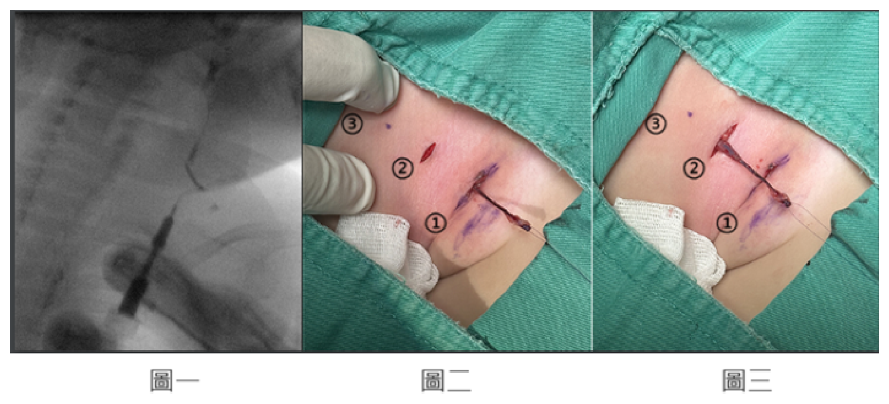
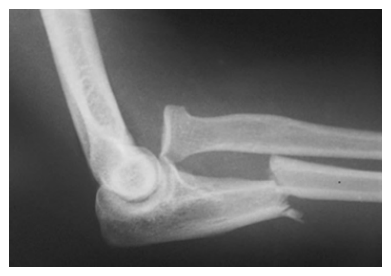
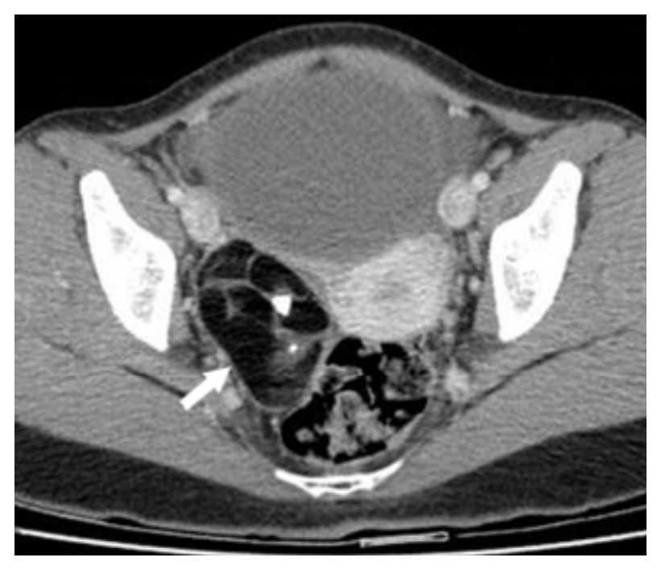
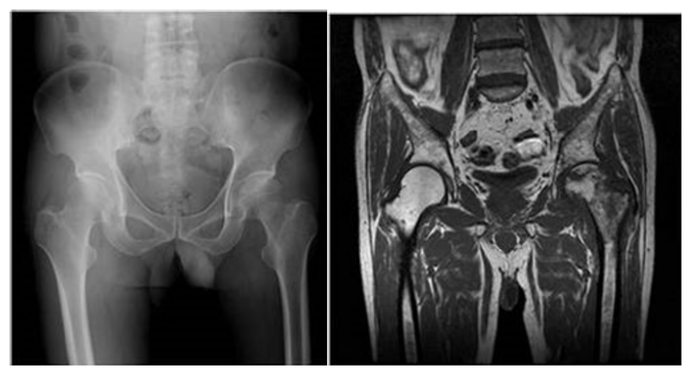

開卷有益 ／
醫師 ／ 醫學（五）（包括外科、骨科、泌尿科等科目及其相關臨床實例與醫學倫理） ／ 115 年115 年醫師醫學（五）（包括外科、骨科、泌尿科等科目及其相關臨床實例與醫學倫理）試題與答案
這一頁是民國 115 年醫師醫學（五）（包括外科、骨科、泌尿科等科目及其相關臨床實例與醫學倫理）的整份歷屆試題，共 80 題，題目與標準答案出自考選部「國家考試試題及測驗式試題答案」開放資料，其中 80 題附有詳解。以下逐題列出題幹、選項與答案；要計時作答或記錄成績，請用線上練習。
考選部原始場次代碼：115020
線上作答這一科 →
全部 80 題
第 1 題
有關小孩外傷的敘述，下列何者最適當？
（A） 小孩的頭皮撕裂傷流血，容易造成失血性休克（B） 由於小孩的肋骨仍在發育中，當胸部受到撞擊時會比大人容易有肋骨骨折（C） 比起成年人，小孩的肝脾臟受到胸廓（rib cage）的保護部分較多（D） 脾臟破裂採取非手術療法處置，比成人有較低的成功率答案：（A）
詳解與考點 正解：小孩頭皮血管豐富，頭皮撕裂傷即使外觀傷口不大也可能持續大量出血；嬰幼兒的循環血量較少，失血較容易迅速造成失血性休克，故（A）最適當。兒童外傷不能以骨折與否排除內臟傷害，必須依生命徵象與受傷機轉評估。
B：兒童肋骨較有彈性，胸部鈍傷時反而未必骨折；但力量仍可傳至肺部或胸腹腔臟器。因此「比成人容易肋骨骨折」把兒童胸廓柔韌性的臨床意義說反了。
C：兒童胸廓對肝、脾的保護較成人少，因肋骨較水平、胸廓包覆範圍較有限，肝脾也相對較容易受傷，故不符。
D：血流動力學穩定的兒童脾臟破裂，非手術治療的成功率通常很高；這是兒童腹部鈍傷的重要處置原則，並非較成人低。
本題考點：兒童外傷（pediatric trauma）——兒童循環血量少，頭皮傷可造成顯著失血；兒童胸廓柔韌，無肋骨骨折仍可能有胸腹腔臟器傷；脾臟損傷的非手術治療（nonoperative management）須以血流動力學穩定為前提。
第 2 題
關於滑液囊腫（ganglion cyst）的好發位置，下列何者錯誤？
（A） 最常發生於手腕背側，與舟月韌帶（scapholunate ligament）相關（B） 常見於手腕掌側，可能與橈動脈鄰近（C） 常見於手指遠端指間關節（DIP joint），亦稱為 mucous cyst（D） 常發生於 A2 pulley，可能影響屈指肌腱活動答案：（D）
詳解與考點 正解：滑液囊腫的「好發位置」。腱鞘相關的滑液囊腫可出現在手指掌側、靠近掌指關節或 A1 pulley，造成扳機樣不適；（D）將其典型位置寫成 A2 pulley，故為錯誤敘述。
A：手腕背側是最常見位置，常源自舟月韌帶附近的關節囊，敘述正確，故不是答案。
B：手腕掌側滑液囊腫也常見，因可鄰近橈動脈，處置或抽吸時尤其要注意血管損傷，敘述正確。
C：遠端指間關節背側的黏液囊腫（mucous cyst）是滑液囊腫的一種常見表現，常與退化性關節變化相關，敘述正確。
本題考點：滑液囊腫（ganglion cyst）——常見於手腕背側舟月韌帶區、手腕掌側與手指腱鞘附近；黏液囊腫（mucous cyst）位於 DIP joint；屈指腱鞘囊腫較典型在 A1 pulley。
第 3 題
支配心臟血液循環的主要冠狀動脈（coronary arteries），下列何者錯誤？
（A） Left main coronary artery（B） Left anterior descending coronary artery（C） Circumflex coronary artery（D） Radial coronary artery答案：（D）
詳解與考點 正解：題目問供應心臟的主要冠狀動脈。冠狀動脈系統包括左主冠狀動脈及其重要分支左前降支、迴旋支；橈動脈位於前臂，是上肢動脈而非冠狀動脈，故錯誤的是（D）。
A：左主冠狀動脈（left main coronary artery）自左冠狀竇發出，之後通常分為左前降支與迴旋支，屬冠狀循環的主要血管。
B：左前降支（left anterior descending coronary artery）通常沿前室間溝走行，供應左心室前壁、心室中隔前部等區域，為主要冠狀動脈分支。
C：迴旋支（circumflex coronary artery）為左冠狀動脈的主要分支之一，沿冠狀溝走行，供應左心室側壁等區域，敘述正確。
本題考點：冠狀動脈解剖（coronary artery anatomy）——左主冠狀動脈主要分為左前降支與迴旋支；橈動脈（radial artery）屬上肢動脈，不能與冠狀動脈混淆。
第 4 題
30 歲女性，因急性心衰竭以及肺水腫至急診就診，心臟超音波檢查發現僧帽瓣前葉腱索斷裂（rupture ofchordae）並且有嚴重僧帽瓣逆流。此僧帽瓣逆流在 Carpentier 分類（Carpentier classification）中屬於何種 dysfunction？
（A） Type Ⅰ（B） Type Ⅱ（C） Type Ⅲa（D） Type ⅢB答案：（B）
詳解與考點 正解：僧帽瓣前葉腱索斷裂。腱索斷裂使瓣葉失去限制而過度活動、甚至翻向左心房，屬於瓣葉運動增加（excessive leaflet motion）的 Carpentier Type II dysfunction，故選（B）。
A：Carpentier Type I 是瓣葉運動正常，逆流多由瓣環擴張或瓣葉穿孔造成；本題已有腱索斷裂，並非正常瓣葉運動。
C：Carpentier Type IIIa 是收縮期與舒張期皆受限的瓣葉運動，常見於風濕性瓣膜病；它是「限制」而非腱索斷裂造成的過度活動。
D：Carpentier Type IIIb 是收縮期瓣葉受限，常與左心室重塑造成的牽拉有關；本題的急性病因是前葉腱索斷裂，機轉不同。
本題考點：Carpentier 分類（Carpentier classification）——Type I 為瓣葉運動正常；Type II 為過度活動，如腱索斷裂或瓣葉脫垂；Type IIIa、IIIb 均為瓣葉運動受限，但受限時相與病因不同。
第 5 題
有關肺挫傷（pulmonary contusions），下列敘述何者最不適當？
（A） 常於受傷後 12 小時內惡化（B） 可能需呼吸器（mechanical ventilation）甚至葉克膜（extracorporeal membrane oxygenation）支持（C） 最初之胸腔 X 光（initial chest radiograph）最適合評估其嚴重度（D） 兒童之肋骨較柔韌，胸腔鈍傷時就算沒有骨折，仍常有肺挫傷答案：（C）
詳解與考點 正解：肺挫傷在受傷後可隨水腫與出血進展而惡化，初始胸部 X 光常低估傷害；電腦斷層對早期肺實質挫傷較敏感，故把初始胸部 X 光說成「最適合評估嚴重度」的（C）最不適當。
A：肺挫傷的影像與氧合障礙可在受傷後數小時逐漸明顯，早期持續監測很重要；此選項所述的早期惡化方向正確。
B：嚴重肺挫傷可能造成低氧血症與呼吸衰竭，需採呼吸器支持；極重症可考慮體外維生支持，敘述符合重症處置概念。
D：兒童肋骨較柔韌，鈍性胸傷的能量可傳至肺部而未留下肋骨骨折，因此「無骨折仍可能肺挫傷」正是容易被忽略的臨床陷阱。
本題考點：肺挫傷（pulmonary contusion）——傷後肺水腫與肺泡出血可延遲顯現；初始胸部 X 光可能低估病灶，電腦斷層（computed tomography）較敏感；兒童無肋骨骨折不能排除胸腔內傷。
第 6 題
下列何者不是食道穿孔治療的重要原則？
（A） 積極的引流控制感染（B） 早期診斷與治療（C） 維持腸道營養（D） 保留食道切勿切除答案：（D）
詳解與考點 正解：食道穿孔治療的核心是及早辨識、廣效抗感染處置、控制污染並建立充分引流，同時提供營養支持。食道是否保留要依穿孔位置、延遲時間、污染程度與基礎食道疾病決定；無法控制感染或食道嚴重病變時可能需要切除或改道，因此（D）「切勿切除」不是普遍重要原則。
A：胃腸內容物漏入縱膈或胸腔會造成嚴重感染，積極引流以控制感染源是治療關鍵，故為正確原則。
B：診斷與處置延遲會增加縱膈炎、敗血症與死亡風險，早期治療是食道穿孔最重要的預後因素之一。
C：病人常需禁食，仍須以腸道營養或其他合適途徑維持營養，才能支持傷口癒合與全身恢復，故為正確原則。
本題考點：食道穿孔（esophageal perforation）——及早診斷、感染源控制（source control）與充分引流是關鍵；營養支持不可忽略；修補、支架、引流或食道切除須依個別病況選擇。
第 7 題
68 歲男性罹患肺炎，合併出現發燒和胸膜性胸痛。經抗生素治療後，胸部 X 光檢查顯示有胸腔積水。經胸腔穿刺術檢查，胸腔積水的 pH 值為 7.1，葡萄糖濃度為 30 mg/dL，積液呈化膿樣。根據這些發現，下列何者是最適當的下一步處置方式？
（A） 繼續使用原本的抗生素並觀察患者以等待抗生素發揮效用，無需安排進一步醫療介入干預（B） 反覆進行胸腔穿刺術並監測後續是否仍有積液蓄積（C） 儘早安排肋膜腔積液引流或胸腔鏡手術介入（D） 開始使用更廣效的抗生素，並安排在 1 週內進行追蹤性胸腔穿刺術答案：（C）
詳解與考點 正解：肺炎後胸腔積水合併 pH 7.1、葡萄糖 30 mg/dL 與化膿外觀，表示複雜性肺炎相關胸腔積液或膿胸，僅靠抗生素無法充分控制感染；應儘早肋膜腔引流，必要時胸腔鏡手術介入，故選（C）。
A：化膿性積液已屬需要感染源控制的情況，單純等待抗生素無法排除膿液，也可能延誤感染控制。
B：反覆胸腔穿刺可作為少數情境的處置，但本題已有明確化膿與不良生化指標，較需要持續且有效的胸腔引流，而非僅反覆診斷性或治療性穿刺。
D：調整抗生素可視培養與臨床狀況進行，但不能取代引流；把處置延後一週會讓已形成的膿胸持續惡化。
本題考點：複雜性肺炎相關胸腔積液（complicated parapneumonic effusion）與膿胸（empyema）——化膿性積液、低 pH 與低葡萄糖提示需要肋膜腔引流（pleural drainage）；抗生素須與感染源控制並行。
第 8 題
關於膽結石合併急性膽囊炎（acute calculous cholecystitis）的敘述，何者最不適當？
（A） 常以發燒和右上腹痛來表現（B） 電腦斷層診斷的敏感度優於超音波（C） 手術時若無法分出明確的構造時，可以只作部分膽囊切除以避免傷害總膽管（D） 先打抗生素作為保守治療，症狀改善後再作延遲的膽囊切除手術，這種策略約有 20％的失敗機會答案：（B）
詳解與考點 正解：急性結石性膽囊炎的影像診斷。超音波可直接評估膽結石、膽囊壁增厚、周邊積液與超音波 Murphy sign，通常是首選檢查；電腦斷層較適合評估併發症或診斷不明時的替代資訊，不能概括為敏感度優於超音波，故（B）最不適當。
A：急性膽囊炎常以右上腹痛、壓痛與發燒表現，雖非每位病人症狀完全相同，仍是典型臨床圖像。
C：若無法安全辨認膽囊三角的構造，部分膽囊切除可作為避免總膽管傷害的保命性策略，重點是避免在不清楚解剖下強行完成全切除。
D：先以抗生素保守治療後延遲手術可能失敗或復發，並非所有病人皆適用；失敗比例會隨病人選擇與定義而異，題幹所稱約 20％的精確數值不宜外推，但不影響其有失敗風險的方向。
本題考點：急性結石性膽囊炎（acute calculous cholecystitis）——超音波（ultrasonography）是首選影像檢查；無法安全辨識解剖時可採取部分膽囊切除（subtotal cholecystectomy）等救援策略；保守治療後延遲手術有失敗與復發風險。
第 9 題
胰腺癌（pancreatic adenocarcinomas）預後相當不好，又俗稱癌王，下列關於此類腫瘤的敘述，何者最不恰當？
（A） 將近約 2/3 的胰臟腺癌發生於胰臟頭（head）或鈎突（uncinate process）（B） 發生於胰臟尾端的腫瘤於診斷時通常較大，可手術切除治癒的比例相對較低（C） 發生於胰臟頭部的腫瘤通常會導致阻塞性黃疸，可比較早期被診斷，手術切除治癒的可能性也相對較高（D） 腺鱗癌（adenosquamous carcinoma）是一種變異型的胰腺癌，同時具有腺細胞和鱗狀細胞，因為分化良好，所以預後相較胰管腺癌（ductal adenocarcinoma）好答案：（D）
詳解與考點 正解：腺鱗癌的預後。胰臟腺鱗癌（adenosquamous carcinoma）雖同時有腺體與鱗狀成分，通常屬侵襲性較高的變異型，預後不會因「分化良好」而優於胰管腺癌；（D）的因果與結論皆不恰當。
A：胰臟腺癌多發生於胰頭或鈎突，故臨床上常見與膽道阻塞相關的表現，敘述方向正確。
B：胰尾腫瘤較不易早期造成膽道阻塞，常在腫瘤較大或已有局部、遠端擴散時才被發現，因此可切除治癒比例較低，敘述正確。
C：胰頭腫瘤較可能造成阻塞性黃疸，因而較早被偵測；這使其相對較有機會在可切除階段診斷，故敘述正確。
本題考點：胰臟腺癌（pancreatic adenocarcinoma）——胰頭／鈎突是常見原發位置，黃疸可促成較早診斷；胰尾腫瘤常較晚發現；腺鱗癌（adenosquamous carcinoma）是預後不佳的變異型。
第 10 題
腹股溝深環（deep inguinal ring）位於下列何結構？
（A） 腹外斜肌腱膜（aponeurosis of external oblique muscle）（B） 腹內斜肌（internal oblique muscle）（C） 腹橫筋膜（transversalis fascia）（D） 錐狀肌（pyramidalis muscle）答案：（C）
詳解與考點 正解：腹股溝深環是精索或子宮圓韌帶進入腹股溝管的入口，為腹橫筋膜（transversalis fascia）的開口，位於下腹壁血管外側，故選（C）。
A：腹外斜肌腱膜形成的是腹股溝淺環，這是腹股溝管的出口而非深環，兩者最容易混淆。
B：腹內斜肌參與形成腹股溝管的上壁與精索相關肌肉構造，但深環本身不是位於腹內斜肌。
D：錐狀肌位在下腹前壁正中附近，與位於下腹壁血管外側的深環沒有解剖上的直接關係。
本題考點：腹股溝管解剖（inguinal canal anatomy）——深環（deep inguinal ring）是腹橫筋膜的開口；淺環（superficial inguinal ring）位於腹外斜肌腱膜，為兩者的關鍵鑑別。
第 11 題
下列何者屬於 presinusoidal portal hypertension 的原因？
（A） primary biliary cirrhosis（B） congestive heart failure（C） intrahepatic vascular occlusive disease（D） sarcoid答案：（D）
詳解與考點 正解：官方答案為 D；惟本題有分類爭議。sarcoid 的肉芽腫性肝病可影響門管區的小門靜脈分支，形成前竇狀隙（presinusoidal）門脈高壓。
A：primary biliary cirrhosis，即原發性膽汁性膽管炎，早期小膽管與門管區病變亦可造成前竇狀隙型門脈高壓。因此 A 也可能符合題意，顯示本題以 D 作單一答案的命題判準有爭議。
B：congestive heart failure 使右心與肝靜脈壓上升，屬肝後性（posthepatic）門脈高壓的機轉，而不是前竇狀隙型。
C：intrahepatic vascular occlusive disease 是肝內血管阻塞性病變，受影響血管層次與前竇狀隙門脈小分支不同，不能作為本題的典型答案。
本題考點：門脈高壓（portal hypertension）的阻力位置——前竇狀隙型（presinusoidal）可見於肉芽腫性肝病如 sarcoidosis；肝後型（posthepatic）可由右心衰竭引起；肝硬化常以竇狀隙阻力為主；原發性膽汁性膽管炎早期的門管區病變則可有前竇狀隙成分。
第 12 題
病人在接受甲狀腺手術後，平時講話尚可並無聲帶麻痺現象，但唱歌時無法發出高音，最可能的原因為下列何者？
（A） 舌下神經（hypoglossal nerve）損傷（B） 上喉神經外分枝（external branch of the superior laryngeal nerve）損傷（C） 喉返神經（recurrent laryngeal nerve）損傷（D） 迷走神經（vagus nerve）損傷答案：（B）
詳解與考點 正解：平時說話正常、唯獨無法唱高音，關鍵指向環甲肌（cricothyroid muscle）功能受損。環甲肌由上喉神經外分枝支配，負責拉緊聲帶以提高音調；因此最可能是（B）損傷。
A：舌下神經主要支配舌肌，損傷以舌頭偏斜、構音或吞嚥問題為主，不能解釋特異的高音喪失。
C：喉返神經支配多數內喉肌，損傷常導致嗄聲、聲帶活動異常甚至呼吸道問題；它看似也和發聲相關，但本題平時聲音正常而只失高音，更符合上喉神經外分枝。
D：迷走神經主幹損傷影響範圍廣，常合併吞嚥、咽喉感覺或多種喉部功能異常，與單一高音缺失不符。
本題考點：上喉神經外分枝（external branch of the superior laryngeal nerve）——支配環甲肌（cricothyroid muscle），負責聲帶張力與高音；喉返神經（recurrent laryngeal nerve）損傷則較典型造成嗄聲與聲帶麻痺。
第 13 題
關於甲狀腺癌的腫瘤生成與致癌機轉，下列敘述何者最不適當？
（A） BRAF 基因突變常見於乳突癌（papillary thyroid carcinoma）與未分化癌（anaplastic thyroidcarcinoma）腫瘤（B） RET 基因突變可見於甲狀腺髓質癌（medullary thyroid carcinoma）腫瘤（C） RAS 基因突變可見於甲狀腺濾泡腺瘤與濾泡癌（follicular thyroid adenoma and carcinoma）腫瘤（D） p53 基因是一種致癌基因，其突變常見於未分化甲狀腺癌（anaplastic thyroid cancer）腫瘤答案：（D）
詳解與考點 正解：題目問最不適當的致癌機轉敘述。p53 是抑癌基因（tumor suppressor gene），其失活突變常與未分化甲狀腺癌相關；（D）卻把 p53 稱為致癌基因，故錯誤。
A：BRAF 突變是甲狀腺乳突癌的重要分子異常，也可在未分化癌中見到，敘述正確。
B：RET 基因異常與甲狀腺髓質癌密切相關，尤其遺傳性病例具有重要診斷與家族評估意義，敘述正確。
C：RAS 突變可見於濾泡性腫瘤譜系，包括濾泡腺瘤與濾泡癌，敘述正確。
本題考點：甲狀腺腫瘤分子病理（molecular pathology of thyroid tumors）——BRAF 常見於乳突癌；RET 與髓質癌相關；RAS 常見於濾泡性腫瘤；p53 是抑癌基因，其失活與未分化癌相關。
第 14 題
40 歲女性，家裡有乳癌病史，自己也有 BRCA1 mutation。兩週前自己感覺到左乳房有硬塊。到門診做進一步檢查，懷疑有惡性可能。該患者從來沒有接受過任何乳房檢查。接下來將安排之檢查，下列何者最不適合？
（A） 乳房超音波（ultrasonography）（B） 乳房攝影（mammography）（C） 磁振造影（magnetic resonance imaging）（D） 正子斷層造影（positron emission tomography）答案：（D）
詳解與考點 正解：BRCA1 突變、家族史與新發乳房硬塊使惡性評估優先。局部乳房病灶的初始診斷需乳房攝影、超音波，必要時磁振造影與影像導引切片；正子斷層造影不是未確診局部乳房腫塊的常規初始檢查，故（D）最不適合。
A：乳房超音波可協助區分囊性與實質病灶、評估腋下淋巴結，並常用於導引切片，適合作為此病人的局部評估。
B：乳房攝影是乳房腫塊診斷性影像評估的基本工具，可觀察鈣化與結構扭曲，雖然高風險病人乳腺可能較緻密，仍非不適合。
C：乳房磁振造影對高風險 BRCA1 帶因者的乳房評估很有價值，也可協助判斷病灶範圍；它看似檢查更昂貴，但在本題高遺傳風險情境仍屬合理。
本題考點：乳房腫塊診斷（breast mass evaluation）——高風險 BRCA1 帶因者有新病灶時，以診斷性乳房攝影、超音波與必要時 MRI 評估，並以組織診斷確認；PET 多用於特定已確診癌症的分期或復發評估。
第 15 題
51 歲女性患者，每月仍有固定月經週期，近一年來體重緩慢下降且偶爾有飽餐後腹漲不適的感覺，但因腹部不適持續的時間不長，也就不以為意。在接受成人健康檢查時，發現血色素低到 7.0 g/dL，且糞便潛血呈現陽性反應。在接受大腸鏡鏡檢時，意外發現升結腸有快要堵住腸腔的腫瘤，腸鏡也因腸道狹窄無法穿過腫瘤到達 cecum。腸鏡切片結果為 adenocarcinoma, microsatellite stable（MSS）。在電腦斷層檢查後，發現腫瘤疑似有侵犯臟層腹膜（visceral peritoneum），腫瘤附近可見 6 顆直徑大於 1 公分腫大的淋巴結，其他器官則沒有明顯轉移跡象。根據檢查結果，下列敘述何者錯誤？
（A） 罹患右側大腸癌比左側大腸直腸癌易出現貧血的臨床表現（B） 此患者的臨床分期為 cT3N2bM0（C） 對於此患者，標準的手術術式為 radical right hemicolectomy with lymph node dissection（D） 目前的研究認為，immunotherapy 對於 MSS 的 colon adenocarcinoma 效果有限答案：（B）
詳解與考點 正解：腫瘤疑似侵犯臟層腹膜與 6 顆區域淋巴結。侵犯臟層腹膜為 T4a，而 4～6 顆區域淋巴結為 N2a；沒有遠端轉移為 M0。因此（B）的 cT3N2bM0 分期錯誤，故選（B）。
A：右側大腸腫瘤常以慢性隱性出血、缺鐵性貧血表現；本例血色素 7.0 g/dL 與糞便潛血陽性正符合此臨床特徵。
C：可切除的升結腸癌標準根治手術為根治性右半結腸切除合併區域淋巴結廓清，敘述正確。
D：微衛星穩定型（MSS）大腸腺癌對免疫治療的反應通常有限；它看似所有癌症都可用免疫治療，但療效與微衛星狀態高度相關，故本敘述正確。
本題考點：大腸癌 TNM 分期（TNM staging of colon cancer）——臟層腹膜侵犯為 T4a；4～6 顆區域淋巴結為 N2a；右側大腸癌常以缺鐵性貧血呈現；MSS 大腸癌對免疫治療反應較有限。
第 16 題
關於大腸憩室炎之敘述，下列何者正確？
（A） 急性發作時，大腸鏡檢查是適合的處置（B） 目前的治療指南對於非複雜性的大腸憩室炎應進行手術切除（C） 膿瘍不管大小，一律建議在電腦斷層或腹部超音波下先進行經皮引流（percutaneous drainage）（D） 急性非複雜型的憩室炎在緩解後 4～8 週要進行大腸鏡檢查答案：（D）
詳解與考點 正解：急性憩室炎緩解後安排大腸鏡，是為了排除被急性發炎掩蓋的結直腸腫瘤與評估大腸病灶；通常待急性發炎消退後再做，題述 4～8 週的時程符合此原則，故（D）正確。
A：急性期腸壁發炎脆弱，大腸鏡可能增加穿孔風險，通常不作為急性發作當下的適當處置。
B：非複雜性憩室炎多可採保守治療，是否選擇手術須看反覆發作、併發症與個別情況，並非一律切除。
C：膿瘍是否經皮引流取決於大小、位置、可達性與臨床反應；小型膿瘍可先以抗生素等保守治療，故「不管大小一律引流」錯誤。
本題考點：急性大腸憩室炎（acute colonic diverticulitis）——急性期避免常規大腸鏡；非複雜型通常先保守治療；膿瘍引流需個別化；緩解後大腸鏡（colonoscopy）用於排除其他病灶。
第 17 題
關於腹腔鏡及機械手臂在遠端胰臟切除術（distal pancreatectomy）之應用成果，下列敘述何者錯誤？
（A） 兩者皆保有微創手術相對於開腹手術的優點（B） 兩者重大併發症，如：胰臟瘻管等發生率相近（C） 機械手臂手術轉為開腹率及脾臟保留率均較腹腔鏡手術較低（D） 腹腔鏡手術花費較低答案：（C）
詳解與考點 正解：比較遠端胰臟切除的腹腔鏡與機械手臂手術時，機械手臂的器械靈活度可增加脾臟保留的可行性。機械手臂相較腹腔鏡常見較低的轉為開腹率，但脾臟保留率應較高而非較低；（C）後半句比較方向錯誤，故錯誤。
A：兩者皆以小切口與減少腹壁創傷為特徵，通常保有相對於開腹手術的微創優點，敘述正確。
B：胰臟瘻管等重大併發症受胰臟質地、胰管與病人因素影響很大，兩種微創方式的整體結果可相近，敘述可成立。
D：機械手臂設備與耗材成本較高，腹腔鏡手術通常花費較低，敘述正確。
本題考點：遠端胰臟切除（distal pancreatectomy）的微創手術——腹腔鏡與機械手臂均具微創優勢；胰臟瘻管等結果未必有明顯差異；機械手臂可能提高脾臟保留可行性但成本較高。
第 18 題
關於腹腔鏡及機械手臂等微創手術在肝臟切除術之角色，下列敘述何者錯誤？
（A） 一般而言，機械手臂切肝手術較腹腔鏡切肝手術耗費時間短、失血較少，但醫療費用較高（B） 腹腔鏡與機械手臂切肝手術在適應症上大致相同（C） 腹腔鏡與機械手臂切肝手術在併發症及轉為開腹率方面並沒有顯著差異（D） 微創手術已成為肝臟邊緣病灶切除的標準治療方式答案：（A）
詳解與考點 正解：機械手臂與腹腔鏡切肝的比較。機械手臂具關節式器械與立體視野，但設置與操作時間未必較短；將其概括成「耗費時間短、失血較少」並列為一般規則過度推論，故（A）錯誤。較高醫療費用則是機械手臂常見限制。
B：兩種微創切肝技術的適應症有高度重疊，皆須依腫瘤位置、肝功能、血管膽管關係與團隊經驗選擇，故大致相同的敘述合理。
C：在適當病人與有經驗中心，比較研究常未顯示兩者於主要併發症或轉開腹率有一致的顯著差異，敘述合理。
D：對位於肝臟周邊、技術上可及的病灶，微創切除已是成熟且常用的標準選項；它並非意味所有肝切除都適合微創，而是指此類選擇性適應症。
本題考點：微創肝切除（minimally invasive hepatectomy）——腹腔鏡與機械手臂的適應症多重疊，結果取決於病灶與術者經驗；機械手臂成本較高，手術時間與失血量沒有可一概而論的固定優勢。
第 19 題
55 歲男性，因罹患 B 肝長期在胃腸肝膽內科進行追蹤，近期因超音波檢查發現疑似有右肝腫瘤，抽血檢查發現 GOT:25 IU/L，GPT:21 IU/L，Total bilirubin:0.8 mg/dL，PT:1.5s，albumin:4.38 g/dL。電腦斷層檢查顯示肝臟第五葉有顆 2.5 公分大的腫瘤，並有些微肝硬化之表現但無明顯腹水，經皮細針抽取檢體證實為肝細胞癌，故轉介一般外科進行手術評估，抽血檢查發現胎兒蛋白值（AFP）為 350 ng/mL，且無肝腦病變之發現。該男性之肝功能分級 Child–Pugh Score 為多少以及後續建議之治療方法何者較適當？
（A） Child–Pugh A，將安排腹腔鏡肝臟部分切除手術（B） Child–Pugh B，將安排靛氰綠（Indocyanine green）肝功能檢查，以評估是否適合腹腔鏡手術（C） Child–Pugh C，建議射頻灼燒術（Radiofrequency ablation）（D） Child–Pugh B，將安排經動脈導管肝臟腫瘤化學栓塞術（Trans-Arterial Chemo-Embolization）答案：（A）
詳解與考點 正解：Child–Pugh 評估依膽紅素、白蛋白、凝血功能、腹水與肝腦病變判分。本例 bilirubin 0.8 mg/dL、albumin 4.38 g/dL、無明顯腹水、無肝腦病變，且題示 PT 延長 1.5 s，五項皆為 1 分：1+1+1+1+1=5 分，屬 Child–Pugh A。單一 2.5 cm 肝細胞癌、肝功能保留且可切除時，腹腔鏡肝部分切除為合理選擇，故選（A）。
B：本例加總為 5 分而非 Child–Pugh B；靛氰綠檢查可在部分手術評估情境提供額外肝儲備資訊，但不能改變題目已可判定的 Child–Pugh 分級。
C：Child–Pugh C 代表明顯較差的肝儲備，本例的白蛋白、膽紅素、腹水與肝腦病變均不支持此分級，因此以此為前提的處置不符。
D：經動脈化學栓塞多用於不可切除或特定中間期病人；本例為小型、無明顯轉移且肝功能保留的病灶，直接將其歸為 Child–Pugh B 並優先栓塞不適當。
本題考點：Child–Pugh 分級（Child–Pugh score）——以 bilirubin、albumin、凝血功能、腹水、肝腦病變各自計分；肝細胞癌（hepatocellular carcinoma）治療須整合腫瘤範圍、肝功能與可切除性；肝功能保留的局限病灶可考慮肝切除。
第 20 題
關於人體水分組成的敘述，下列何者錯誤？
（A） 水分約占體重（total body weight）約 50～60％（B） 相較於骨骼或脂肪，肌肉或實質器官（solid organ）含有更高的水分含量（C） 年長者的體內水分比例低於身體質量指數（BMI）＝22 的年輕男性（D） 18 歲男性體內的水分占比高於一般正常的新生兒（newborn）答案：（D）
詳解與考點 正解：體內總水量受年齡、性別與脂肪比例影響；新生兒的體水比例高於成人男性，因此（D）稱 18 歲男性高於一般新生兒，方向錯誤。
A：成人總體水量約占體重一半以上，組成會隨性別、年齡與體脂變化；題述約 50～60％符合成人的概略範圍。
B：肌肉與實質器官的含水量高於脂肪與骨骼，因此瘦體組織比例較高者的總體水量比例也較高，敘述正確。
C：年長者通常肌肉量減少、脂肪比例增加，體內水分比例往往低於 BMI 22 的年輕男性，敘述正確。
本題考點：總體水量（total body water）——受年齡、性別與體脂／瘦體組織比例影響；新生兒與兒童的體水比例較高；脂肪組織含水少，肌肉與實質器官含水較多。
第 21 題
陳先生，身高 175 公分、體重 70 公斤，預計入院接受腹腔鏡膽囊切除手術，術前檢驗數據：Hb:14.8 g/dL，Hct:45％，WBC:8,600/μL，platelet: 246,000/μL，BUN:16 mg/dL，creatinine:0.9 mg/dL，glucose:95mg/dL，Na:142 mmol/L，K:4.1 mmol/L。下列敘述何者錯誤？
（A） 身體的總水分約 38 公斤（B） 血液的滲透壓約為 315 mOsm/L（C） 身體的水分分布，分為細胞外液（extra-cellular fluid, ECF），例如：血漿與組織間液，和細胞內液（intra-cellular fluid, ICF）（D） 體內的細胞內液的總重量約 25 公斤答案：（B）
詳解與考點 正解：血清 Na 142 mmol/L、glucose 95 mg/dL 與 BUN 16 mg/dL，可用估算血漿滲透壓公式 2×Na+glucose/18+BUN/2.8 計算：2×142=284、95/18約5.3、16/2.8約5.7，合計約295 mOsm/L，而非315 mOsm/L，故錯誤的是 B。
A：70 kg 成人男性的總水量可約以體重55％估算，即70×0.55約38.5 kg，與「約38公斤」相符。
C：體液依細胞膜分為細胞外液（extracellular fluid, ECF）與細胞內液（intracellular fluid, ICF）；血漿與組織間液均屬 ECF，敘述正確。
D：若總水量約38.5 kg，ICF 約占總水量的2/3，即約25.7 kg，故「約25公斤」合理；它看似與成人常用60％體重的粗估不同，但本題採較貼近此個案的估算。
本題考點：體液區室（body fluid compartments）——總水量、ECF 與 ICF 的比例；血漿滲透壓（plasma osmolality）估算——2×Na+glucose/18+BUN/2.8。
第 22 題
關於高血鉀症（hyperkalemia）常見的原因，下列何種情況較不會出現？
（A） 大面積的壓軋傷（crush injury）病患（B） 跑了超長（＞24 小時）馬拉松的跑者（C） 術後腹膜炎感染，敗血症酸中毒的病人（D） 穩定使用利尿劑 furosemide 的 55 歲男性高血壓病人答案：（D）
詳解與考點 正解：「較不會出現」高血鉀。穩定使用 furosemide 會增加腎臟鉀離子排泄，典型傾向低血鉀，而非高血鉀，故選 D。
A：壓軋傷造成肌肉細胞大量破壞，細胞內鉀離子外漏，且可能合併急性腎損傷，容易高血鉀。
B：超長時間運動可有肌肉損傷、酸中毒或腎灌流下降，均可能使血鉀升高。
C：敗血症酸中毒時氫離子移入細胞、鉀離子向細胞外移動，且腎功能可能惡化，因此可能高血鉀。
本題考點：高血鉀症（hyperkalemia）的成因——細胞破壞、酸中毒與腎臟排鉀減少；袢利尿劑（loop diuretic）furosemide 增加排鉀，常造成低血鉀。
第 23 題
臨床上可運用 Model for end-stage liver disease（MELD）score，來預測等待肝臟移植的末期肝病患者於三個月內的死亡風險。下列何者不是計算 MELD score 的參數？
（A） 血清肌酸酐（serum creatinine）（B） 血清總膽紅素（serum total bilirubin）（C） 國際標準化比值（international normalized ratio, INR）（D） 血清白蛋白（serum albumin）答案：（D）
詳解與考點 正解：MELD score 的計算參數。傳統 MELD 以血清肌酸酐、血清總膽紅素與 INR 估計末期肝病短期死亡風險，血清白蛋白不在其中，故選 D。
A：血清肌酸酐（serum creatinine）反映腎功能，是 MELD 的計算項目。
B：血清總膽紅素（serum total bilirubin）反映膽紅素排泄與肝功能受損程度，是計算項目。
C：INR 反映肝臟合成凝血因子的功能，是 MELD 的計算項目。
本題考點：末期肝病模型（Model for End-stage Liver Disease, MELD）——以 creatinine、total bilirubin、INR 評估等待肝移植病人的短期死亡風險；白蛋白（albumin）雖是肝功能指標，卻非傳統 MELD 參數。
第 24 題
傷口癒合期間，不同細胞會分別出現於傷口。下列敘述何者正確？
（A） 淋巴球（lymphocytes）為起始增生期之主要細胞（B） 嗜酸性球（eosinophils）為最初止血期之主要細胞（C） 嗜中性球（neutrophils）為最初發炎期之主要細胞（D） 纖維母細胞（fibroblasts）在傷口癒合最初期即達到數量高峰答案：（C）
詳解與考點 正解：傷口癒合最初的發炎期。嗜中性球最早大量進入傷口，負責吞噬細菌與清除壞死組織，因此 C 正確。
A：淋巴球與巨噬細胞較參與後續發炎調節及修復，不是起始增生期的主要細胞；增生期以纖維母細胞、內皮細胞等為主。
B：最初止血主要靠血小板聚集及凝血級聯反應，嗜酸性球不是主要效應細胞。
D：纖維母細胞在發炎後進入增生期才逐漸增加並合成膠原蛋白，不會在傷口最初期即達高峰。
本題考點：傷口癒合（wound healing）階段——止血期以血小板為主；發炎期早期以嗜中性球為主；增生期由纖維母細胞進行膠原蛋白與基質生成。
第 25 題
關於有效減少手術部位感染（surgical site infection）之方式，下列何者最不適當？
（A） 肥胖者於術前減重（B） 腹部手術者於術前接受腸道準備（bowel preparation）（C） 術前一週預先施打強效預防性抗生素（prophylactic antibiotic）（D） 手術時才移除手術部位之毛髮答案：（C）
詳解與考點 正解：「最不適當」的手術部位感染預防。預防性抗生素必須讓切皮時已有有效組織濃度；術前一週給藥，手術時已無法涵蓋切口污染時機，且徒增不良反應與抗藥性風險，故選 C。
A：肥胖是手術部位感染的可調整危險因子，術前減重是合理的風險控制方向，非最不適當。
B：腹部手術的腸道準備須視手術類型與做法而定；在適當適應症及合併口服抗生素的情境，可能有助預防感染，不能因名稱就視為一律錯誤。
D：除毛原則是非必要不除；若須除毛，接近手術時間處理較適當，故手術時移除毛髮的時機方向正確。
本題考點：手術部位感染（surgical site infection, SSI）預防——預防性抗生素的給藥時機須涵蓋切皮；可調整危險因子控制；必要除毛宜接近手術時處理。
第 26 題
67 歲男性，有長期高血壓病史，突然發生右側肢體無力與構音障礙。電腦斷層顯示左側基底核出血。下列何者最可能為其致病機轉？
（A） 老年性腦病變併發澱粉樣血管病（amyloid angiopathy）造成穿通動脈破裂（B） 小動脈破裂（Charcot-Bouchard aneurysm rupture）造成穿通動脈出血（C） 頸內動脈與海綿竇瘻管（carotid-cavernous fistula）導致靜脈高壓性出血（D） 血栓溶解治療後產生再灌流性出血（hemorrhagic transformation after thrombolysis）答案：（B）
詳解與考點 正解：長期高血壓合併基底核出血。慢性高血壓使深部穿通小動脈產生脂玻樣變與微小動脈瘤，Charcot-Bouchard aneurysm 破裂是典型機轉，故選 B。
A：腦類澱粉血管病較典型造成高齡者大腦皮質或皮質下葉性出血，不是高血壓病人基底核深部出血的典型來源。
C：頸內動脈海綿竇瘻管主要造成搏動性眼球突出、結膜充血或顱神經症狀，不能解釋此處深部腦出血。
D：題幹未提缺血性腦中風後接受血栓溶解治療；再灌流出血須有此臨床脈絡，故不符。
本題考點：高血壓性腦出血（hypertensive intracerebral hemorrhage）——深部基底核、視丘、橋腦等穿通動脈區是常見部位；Charcot-Bouchard microaneurysm 為典型病理機轉。
第 27 題
關於兒童腦幹膠質瘤（pediatric brainstem glioma），下列何者錯誤？
（A） diffuse pontine glioma 多為惡性（B） midbrain glioma（包括 tectal and tegmental glioma）預後優於 diffuse pontine glioma（C） diffuse pontine glioma 的治療以手術為主（D） tectal glioma 常合併水腦答案：（C）
詳解與考點 正解：「錯誤」的兒童腦幹膠質瘤治療。瀰漫性橋腦膠質瘤位於腦幹且呈浸潤性，手術無法作為主要治療；其治療以放射治療等非切除策略為主，因此錯誤的是 C。
A：diffuse pontine glioma 多具侵襲性且預後不佳，敘述正確。
B：midbrain glioma，尤其 tectal glioma，通常較局限，整體預後優於 diffuse pontine glioma，敘述正確。
D：tectal glioma 可阻塞中腦導水管，引起阻塞性水腦，故常合併水腦。
本題考點：兒童腦幹膠質瘤（pediatric brainstem glioma）——diffuse pontine glioma 多為浸潤性惡性病灶且不宜切除；tectal glioma 可因導水管阻塞造成水腦。
第 28 題
下列何者不屬於癲癎手術？
（A） anterior temporal lobectomy（B） vagus nerve stimulation（C） corpus callosotomy（D） microvascular decompression答案：（D）
詳解與考點 正解：「不屬於癲癎手術」。microvascular decompression 是以血管減壓治療三叉神經痛等神經血管壓迫症候群，並非控制癲癎的手術，故選 D。
A：anterior temporal lobectomy 可切除顳葉癲癎灶，是常見的癲癎切除手術。
B：vagus nerve stimulation 是以植入裝置刺激迷走神經的神經調控治療，可用於藥物難治性癲癎。
C：corpus callosotomy 透過切斷胼胝體減少癲癎放電兩側傳播，屬緩和性癲癎手術。
本題考點：癲癎外科（epilepsy surgery）——包括癲癎灶切除、胼胝體切開與迷走神經刺激；微血管減壓術（microvascular decompression）主要治療神經血管壓迫。
第 29 題
新生兒及嬰兒水腦症的原因有 congenital or acquired etiology，下列敘述何者最不適當？
（A） aqueductal stenosis 造成的 hydrocephalus 屬 congenital etiology（B） aqueductal stenosis 造成的 hydrocephalus 屬 communicating hydrocephalus（C） 新生兒 meningitis 後，造成 postinfectious hydrocephalus，多屬 communicating hydrocephalus（D） Chiari Ⅱ malformation 造成的 hydrocephalus 屬 congenital etiology答案：（B）
詳解與考點 正解：導水管狹窄造成的腦脊髓液阻塞位置。aqueductal stenosis 阻斷第三、四腦室之間的腦脊髓液流通，屬非交通性而非交通性水腦，故最不適當的是 B。
A：aqueductal stenosis 可為先天性發育異常，是新生兒與嬰兒水腦的先天性病因。
C：腦膜炎後的發炎與纖維化常妨礙腦脊髓液吸收，屬常見的交通性水腦機轉。
D：Chiari Ⅱ malformation 為先天畸形，常合併水腦，敘述正確。
本題考點：水腦症（hydrocephalus）——交通性水腦多為吸收障礙；非交通性水腦由腦室系統內阻塞造成；導水管狹窄（aqueductal stenosis）是典型非交通性病因。
第 30 題
下列關於頸椎退化性疾病的敘述，何者最不適當？
（A） 急性頸椎椎間盤突出有著典型症狀，仔細的臨床評估可以診斷（B） 最主要的影像學診斷工具為無顯影劑的核磁共振造影檢查（C） 如果病人無法接受核磁共振造影檢查，則可以用骨頭掃描攝影來取代（D） 肌電圖和神經傳導檢查，可以用來區分臂神經叢病變和周邊神經病變答案：（C）
詳解與考點 正解：無法接受 MRI 時的替代影像。頸椎退化病變需要評估椎管、神經根與軟組織壓迫，MRI 禁忌時通常以 CT 或 CT myelography 評估；骨掃描不能取代，故選 C。
A：急性椎間盤突出常有相符的頸痛、神經根痛與神經學症狀，完整病史及理學檢查可建立臨床診斷。
B：無顯影 MRI 能清楚顯示椎間盤、脊髓、神經根與狹窄程度，是主要影像工具。
D：肌電圖與神經傳導檢查可協助區別頸神經根病變、臂神經叢病變與周邊神經病變，敘述正確。
本題考點：頸椎退化性疾病（cervical degenerative disease）影像評估——MRI 優先觀察神經組織；MRI 不可行時可考慮 CT/CT myelography；電生理檢查有助神經病變定位。
第 31 題
在顱內壓上升的病人身上可能觀察到的三樣表徵稱為 Cushing's triad，下列那一項不是三樣表徵之一？
（A） 血壓上升（B） 心跳變慢（C） 頭痛（D） 呼吸不規則答案：（C）
詳解與考點 正解：Cushing's triad 的三項生理表徵。顱內壓上升時典型為血壓上升、心跳變慢與呼吸不規則；頭痛是顱內壓上升的常見症狀，但不屬於三徵，故選 C。
A：血壓上升是 Cushing's triad 的一項表徵。
B：心跳變慢是 Cushing's triad 的一項表徵。
D：呼吸不規則是 Cushing's triad 的一項表徵。
本題考點：Cushing's triad——顱內壓升高（increased intracranial pressure）造成的高血壓、心搏過緩與不規則呼吸，提示可能的腦幹受壓。
第 32 題
下列處理嚴重碾壓肢體（mangled extremity）優先順序之敘述，何者錯誤？
（A） 生命優先於肢體（life over limbs）（B） 血管重建（revascularization）（C） 反覆清創（repeated debridement）（D） 神經重建優先於骨骼重建（nerve over bone）答案：（D）
詳解與考點 正解：嚴重碾壓肢體的重建優先順序。骨架穩定與血流恢復是後續軟組織與神經修復的基礎，不能概括稱神經重建優先於骨骼重建，故錯誤的是 D。
A：多重創傷處置以病人存活為先，life over limbs 是基本原則。
B：缺血肢體須及時評估並進行血管重建，以恢復灌流並降低肢體壞死風險。
C：污染及壞死組織常需分期、反覆清創，才能建立可重建的乾淨傷床。
本題考點：嚴重肢體創傷（mangled extremity）處置——生命優先；復甦與血管灌流、徹底清創及骨架穩定是重建基礎；神經修復須整合於整體重建時序。
第 33 題
關於狹窄性腱鞘炎（tenosynovitis），下列敘述何者最適當？
（A） de Quervain 病主要影響第二背側腱鞘區（second dorsal compartment）（B） 交叉症候群（intersection syndrome）的病變主要發生於 A1 滑車（A1 pulley）（C） 板機指（trigger finger）的病變可能導致指關節無法完全伸展（D） de Quervain 病的診斷主要依賴 X 光檢查來區分其他疾病答案：（C）
詳解與考點 正解：各狹窄性腱鞘炎的典型功能障礙。板機指在 A1 pulley 處屈指肌腱滑動受阻，可造成卡住、彈響與手指無法完全伸展，故 C 最適當。
A：de Quervain 病影響第一背側腱鞘區的拇長外展肌與拇短伸肌，不是第二背側腱鞘區。
B：intersection syndrome 發生於遠端第一背側腱鞘與近端第二背側腱鞘交叉處，不是 A1 pulley；A1 pulley 是板機指的典型部位。
D：de Quervain 病主要依病史與理學檢查診斷，X 光可排除骨性病變但不是主要診斷依據。
本題考點：狹窄性腱鞘炎（stenosing tenosynovitis）——de Quervain 病位於第一背側腱鞘區；intersection syndrome 位於兩腱鞘交叉處；板機指多涉及 A1 pulley。
第 34 題
25 歲男性於籃球比賽時，試圖阻擋對手傳球，被籃球高速撞擊其右手食指末端，出現劇痛、遠端指間關節（DIPJ）屈曲無法主動伸直，近端指間關節（PIPJ）關節活動正常，X 光顯示無明顯骨折且無開放性傷口，經急診醫師診斷為①，建議持續配戴副木。然而病人半年後回整形外科門診追蹤，主訴手指外觀近端指間關節（PIPJ）過度伸直、遠端指間關節（DIPJ）持續屈曲，影響籃球握球與傳球動作，經醫師再評估為②，建議考慮手術治療。根據上述情境，下列何者為最適合的①及②之診斷？
（A） ①mallet finger；②swan neck deformity（B） ①trigger finger；②swan neck deformity（C） ①jersey finger；②boutonnière deformity（D） ①trigger finger；②boutonnière deformity答案：（A）
詳解與考點 正解：球擊後 DIPJ 屈曲且不能主動伸直，這是末端伸指肌腱受傷的 mallet finger。半年後出現 PIPJ 過伸、DIPJ 屈曲，是 mallet finger 長期失衡後的 swan neck deformity，故選 A。
B：trigger finger 是屈指肌腱在 A1 pulley 處卡住，與外傷後 DIPJ 無法主動伸直的表現不符；雖然②正確，①錯誤。
C：jersey finger 是屈指深肌腱斷裂，典型為無法主動屈曲 DIPJ，與本題無法伸直相反；boutonnière deformity 則是 PIPJ 屈曲、DIPJ 過伸，亦與題幹相反。
D：trigger finger 的初始診斷不符，且 boutonnière deformity 的關節姿勢與題幹不符。
本題考點：槌狀指（mallet finger）——末端伸指肌腱受傷造成 DIPJ 伸直不能；天鵝頸畸形（swan neck deformity）為 PIPJ 過伸合併 DIPJ 屈曲；與 jersey finger、boutonnière deformity 鑑別。
第 35 題
體重小於 20 公斤（或小於兩歲）之嚴重燒燙傷孩童，24 小時之輸液復甦（resuscitation），除乳酸林格氏液（Lactated Ringer's solution）外，建議添加下列何者最適當？
（A） 鉀離子（B） 鈉離子（C） 鈣離子（D） 葡萄糖答案：（D）
詳解與考點 正解：體重小於20 kg或小於兩歲的嚴重燒燙傷孩童。幼兒肝醣儲備較有限，燒傷復甦期間除乳酸林格氏液外，需考慮補充葡萄糖以預防低血糖，故選 D。
A：鉀離子補充須依尿量、腎功能與血鉀監測決定，並非所有復甦初始階段一律額外添加的項目。
B：乳酸林格氏液已含有鈉離子，額外加鈉不是本題幼兒特有的重點。
C：乳酸林格氏液含鈣，常規額外補鈣也不是此情境的特定建議。
本題考點：兒童燒傷復甦（pediatric burn resuscitation）——小體重幼兒除等張液復甦外須留意肝醣儲備不足與低血糖，必要時補充葡萄糖；電解質補充需依監測調整。
第 36 題
所謂急性主動脈綜合症（acute aortic syndrome）不包含下列何者？
（A） 主動脈粥狀動脈硬化（Aortic atherosclerosis）（B） 急性主動脈剝離（Acute aortic dissection）（C） 主動脈壁內血腫（Intramural hematoma）（D） 穿透性主動脈潰瘍（Penetrating aortic ulcer）答案：（A）
詳解與考點 正解：急性主動脈綜合症的組成。急性主動脈綜合症包括急性主動脈剝離、主動脈壁內血腫與穿透性主動脈潰瘍；主動脈粥狀動脈硬化是慢性血管病變，不屬於此急性綜合症，故選 A。
B：急性主動脈剝離（acute aortic dissection）是急性主動脈綜合症的核心病型。
C：主動脈壁內血腫（intramural hematoma）屬急性主動脈綜合症。
D：穿透性主動脈潰瘍（penetrating aortic ulcer）屬急性主動脈綜合症。
本題考點：急性主動脈綜合症（acute aortic syndrome）——由 acute aortic dissection、intramural hematoma 與 penetrating aortic ulcer 組成；須與慢性主動脈粥狀硬化區分。
第 37 題
關於主動脈剝離（aortic dissection, AD）、主動脈壁內血腫（intramural hematoma, IMH）及穿透性主動脈潰瘍（penetrating aortic ulcer, PAU）的敘述，下列何者最不適當？
（A） 急性 Type A AD 手術死亡率高，藥物治療無效再考慮手術治療（B） 複雜 Type B AD 如器官灌注不良（malperfusion），需考慮手術治療（C） 急性 Type A IMH 開刀適應症，應比照急性 Type A AD（D） PAU 應藥物治療優先，但針對 PAU 內徑＞20 mm 及 PAU neck＞10 mm，建議儘早手術介入治療答案：（A）
詳解與考點 正解：急性 Type A 主動脈剝離的處置時效。Type A AD 涉及升主動脈，通常須緊急外科評估與手術；不能先以「藥物治療無效」為手術前提，因此 A 最不適當。
B：複雜 Type B AD 合併器官灌流不良時，須考慮血管內或外科介入以恢復灌流，敘述正確。
C：急性 Type A IMH 有進展為剝離或破裂風險，處置原則通常比照 Type A AD 進行緊急評估，敘述正確。
D：PAU 可先進行藥物治療與密切影像追蹤；題列內徑＞20 mm、neck>10 mm 是提示較高風險、宜儘早評估介入的條件，故非本題最不適當選項。
本題考點：急性主動脈剝離（acute aortic dissection）——Type A AD 具致命併發症風險，通常需緊急手術評估；複雜 Type B AD 的 malperfusion 是介入重要適應症；穿透性主動脈潰瘍（penetrating aortic ulcer）的高風險形態須考慮介入。
第 38 題
關於深層靜脈栓塞（deep venous thrombosis, DVT），下列敘述何者錯誤？
（A） 臨床上可能有 Homan sign，但敏感性（sensitivity）與特異性（specificity）皆不高（B） 用檢測 D-dimer 作為唯一正確診斷之工具，但陰性預測值（negative predictive value）＜90％（C） 可使用超音波（duplex ultrasound）幫助診斷，可檢視血栓，或以壓迫（compression）方式進行測試（D） 靜脈攝影（venography）可做較精確的診斷，缺點是較侵入性，且須注射顯影劑答案：（B）
詳解與考點 正解：D-dimer 在 DVT 診斷中的定位。D-dimer 具敏感但非特異的特性，不能作為唯一確診工具；其陰性結果須結合臨床前機率判讀，在適當的低或中臨床前機率情境有較高排除價值；不能固定宣稱陰性預測值＜90％，故 B 錯誤。
A：Homan sign 可見於 DVT，但敏感性與特異性皆不足，不能單靠此徵象診斷，敘述正確。
C：duplex ultrasound 可直接觀察血流與血栓，並以靜脈不可壓迫性協助診斷，是常用檢查。
D：靜脈攝影可提供精確診斷，但具侵入性且需顯影劑，因此不常作為首選，敘述正確。
本題考點：深層靜脈栓塞（deep venous thrombosis，DVT）診斷——先結合臨床前機率；D-dimer 主要用於排除而非確診；壓迫式超音波（compression ultrasonography）是常用影像工具。
第 39 題
關於惡性肋膜間質細胞瘤（mesothelioma）之描述，下列何者最不適當？
（A） 與石綿暴露有關，好發於 40 歲以上之男性（B） 外科角色主要在於切片診斷及姑息性肋膜沾黏治療（C） 單獨外科、化學或放射治療皆無法延長存活（D） 肋膜外全肺切除包括切除肺、臟層、壁層肋膜、心包膜與橫膈本題送分，無標準答案
詳解與考點 本題官方公告送分。
第 40 題
關於惡性生殖細胞瘤（malignant germ cell tumor）之敘述，下列何者最不適當？
（A） 精細胞瘤（seminoma）對放射線治療敏感（B） 惡性非精細胞瘤（non-seminomatous tumor）生殖細胞腫瘤很少對放射線治療敏感（C） 惡性非精細胞瘤（non-seminomatous tumor）生殖細胞腫瘤包括絨毛膜癌（choriocarcinomas）、胚胎細胞癌（embryonal cell carcinomas）等（D） 惡性非精細胞瘤（non-seminomatous tumor）生殖細胞腫瘤多發生於女性答案：（D）
詳解與考點 正解：惡性非精細胞生殖細胞腫瘤的好發族群。非精細胞型睪丸生殖細胞腫瘤主要發生於男性，說其多發生於女性不正確，故選 D。
A：seminoma 對放射線治療較敏感，是其與非精細胞型腫瘤的重要差異之一。
B：non-seminomatous tumor 對放射線治療敏感性低，治療策略不能比照 seminoma，敘述正確。
C：絨毛膜癌與胚胎細胞癌均可屬非精細胞生殖細胞腫瘤的組成，敘述正確。
本題考點：睪丸生殖細胞腫瘤（testicular germ cell tumor）——精細胞瘤（seminoma）較具放射敏感性；非精細胞型（non-seminomatous tumor）包括 embryonal carcinoma、choriocarcinoma 等，主要見於男性。
第 41 題
關於 Ivor Lewis 式食道切除術的描述，下列何者正確？
（A） Ivor Lewis 式食道切除術是一種微創手術，傷口小，恢復快（B） 主要適用於食道上段腫瘤（C） 需進行胸腔與上腹部的淋巴結清掃（D） 術後併發症發生率小於 5％答案：（C）
詳解與考點 正解：Ivor Lewis 式食道切除術的手術範圍；此術式以腹部與右胸腔兩個手術野完成食道切除及胸內吻合，因此手術分期包含上腹部胃周與胸腔縱隔的淋巴結清掃，故選 C。
A：Ivor Lewis 式手術可採微創方式執行，但「Ivor Lewis 式」本身不是微創術式的同義詞；其核心是經腹、經右胸的兩腔手術途徑，不能只以傷口小、恢復快概括。
B：此術式通常用於中下段食道或食道胃交界處病灶，因胸內吻合的位置與手術暴露範圍，並非主要針對食道上段腫瘤。
D：食道切除是重大手術，肺部併發症、吻合處滲漏等均需留意；併發症率不能概括為小於 5％。
本題考點：Ivor Lewis esophagectomy 是經腹部與右胸腔的食道切除及胸內吻合術；淋巴結廓清（lymphadenectomy）須配合腫瘤位置與手術野評估；食道切除術後應警覺肺部與吻合處併發症。
第 42 題
關於腹股溝疝氣手術後復發之描述，何者最不適當？
（A） 造成復發常見的原因與手術技術有關（technical factors）（B） 間接型疝氣相對於直接型疝氣，修補後比較容易復發（C） 大約有 5～10％的股疝氣（femoral hernia）會在疝氣復發時被發現（D） 使用無張力（tension-free）與人造網膜（mesh）修補，可以有效降低再復發的機會答案：（B）
詳解與考點 正解：題目問腹股溝疝氣修補後復發的「最不適當」敘述，關鍵在疝氣型態並不是復發風險的唯一或主要決定因素；復發較常與修補技術、組織品質及張力有關，不能說間接型必然比直接型容易復發，故選 B。
A：網膜位置不足、固定不佳、遺漏疝囊或修補張力處理不當等 technical factors，都可能造成復發，敘述適當。
C：復發疝氣再次手術時應辨認股疝氣，因部分原被視為復發的病例可發現合併或未辨識的股疝氣；此選項提醒的臨床鑑別方向合理。
D：無張力網膜修補（tension-free mesh repair）可避免單純縫合造成的張力，並降低復發風險，是常用的修補原則。
本題考點：疝氣復發（hernia recurrence）常與 technical factors、組織張力及修補策略相關；無張力網膜修補（tension-free mesh repair）是降低復發的重要概念；復發評估須留意股疝氣（femoral hernia）。
第 43 題
關於減重手術後的併發症，下列何者最適當？
（A） sleeve gastrectomy 術後胃食道逆流病（GERD）的發生率下降（B） Roux-en-Y 胃繞道術後最常見的營養缺乏為維生素 B12 和鐵缺乏（C） 可調式胃束帶術（LAGB）的長期體重回升率較 Roux-en-Y 胃繞道術低（D） 膽胰分流術合併十二指腸轉位術（BPD-DS）因繞道後作用的腸道變短，術後低血糖的風險最低答案：（B）
詳解與考點 正解：減重術後的長期營養併發症；Roux-en-Y 胃繞道術同時限制攝食與減少近端小腸吸收，鐵吸收減少，維生素 B12 也因胃酸、內在因子與食物混合改變而易不足，因此 B 最適當。
A：sleeve gastrectomy 會改變胃食道交界壓力與胃的形態，術後 GERD 可新發或惡化，而非發生率下降。它看似是減重後腹壓降低便會改善逆流，但手術本身的解剖改變不能忽略。
C：可調式胃束帶術（LAGB）長期可能發生束帶問題與體重回升；相較 Roux-en-Y 胃繞道術，不能說其長期體重回升率較低。
D：膽胰分流合併十二指腸轉位術（BPD-DS）具有顯著吸收不良效果，術後代謝與營養併發症須密切追蹤，不能以腸道較短推論低血糖風險最低。
本題考點：減重手術（bariatric surgery）的術式差異決定併發症；Roux-en-Y gastric bypass 易有鐵與維生素 B12 缺乏；sleeve gastrectomy 與胃食道逆流（GERD）的關係是常見辨析。
第 44 題
關於急性胰臟炎的手術適應症，下列敘述何者最適當？
（A） 對於嚴重型的急性胰臟炎，一旦確認就要及早進行手術清創（B） 手術只有在感染性壞死或感染的積聚才建議執行（C） 急性胰臟炎所造成的偽囊腫（pseudocyst）形成，一般是外引流比內引流較佳（D） 偽囊腫（pseudocyst）形成時，選擇手術引流會優先於內視鏡引流答案：（B）
詳解與考點 正解：四項中以 B 最適當。感染性壞死或感染性積聚是急性胰臟炎介入的重要適應症；無菌性壞死通常先採支持性治療，但若持續症狀、營養失敗、胃腸道或膽道阻塞、瘻管等併發症，也可能需要引流或清創，故 B 的「只有」字樣並非嚴格正確。
A：嚴重型急性胰臟炎在病程早期進行清創，可能加重生理壓力；壞死組織的介入時機須依感染與病況決定，而非一確診就及早手術。
C：偽囊腫需要引流時，若解剖位置與條件適合，通常以內引流建立至胃或十二指腸的引流途徑；外引流容易形成胰液瘻，並非一般較佳的選擇。
D：偽囊腫的引流方式需依位置、成熟度與併發症選擇；內視鏡引流在合適病例常可行，不能一律將手術引流置於其前。
本題考點：急性胰臟炎（acute pancreatitis）的介入適應症著重感染性壞死（infected necrosis）與感染性積聚；無菌性壞死多先採非手術治療；胰臟偽囊腫（pseudocyst）引流須個別評估內視鏡、手術與經皮途徑。
第 45 題
胃食道逆流（gastroesophageal reflux disease, GERD）是相當常見的下食道疾病，通常是因為下食道括約肌的收縮功能異常，導致胃內容物逆流造成食道傷害。關於此疾病，下列敘述何者最不適當？
（A） 大多數患者會出現胸口燒灼感（heartburn）的症狀（B） 通常建議改變生活飲食習慣，如減肥、戒菸、少量多餐可減緩症狀（C） 以制酸劑減少胃酸分泌，再加上改變生活飲食習慣可以治癒大多數患者（D） 手術治療以重建下食道括約肌為主，需要實施近端胃部切除再重建答案：（D）
詳解與考點 正解：題目問 GERD 最不適當的敘述，抗逆流手術的目的確是強化下食道括約肌屏障，但一般不是為此切除近端胃部後重建；常見概念是以胃底摺疊術重建抗逆流屏障，故選 D。
A：胸口燒灼感（heartburn）是 GERD 的典型症狀，多數患者可出現，敘述適當。
B：減重、戒菸及調整進食習慣可降低逆流誘發因素，是 GERD 的基本處置之一。
C：抑制或中和胃酸合併生活調整能有效改善多數人的症狀與黏膜傷害；此處的重點是症狀控制，不能據此推成每位患者的解剖性逆流都被根治。
本題考點：胃食道逆流病（gastroesophageal reflux disease, GERD）與下食道括約肌功能失調有關；生活型態調整與抑酸治療是基礎處置；抗逆流手術（antireflux surgery）以重建抗逆流屏障為目標。
第 46 題
86 歲男性病患因意識不清被送往急診室，到院呈重度昏迷，理學檢查血壓 120/78 mmHg，心跳每分鐘 82 次，呼吸每分鐘 12 次，體溫 36.5℃，兩眼瞳孔等距 0.4 公分，Glasgow coma scale：E1M1V1，血清生化檢查：glucose 92 mg/dL，ethanol＜10 mg/dL，Na+136 mEq/L，Cl-102 mEq/L，K+3.9 mEq/L，Ca 14.6 mg/dL，BUN 38 mg/dL，creatinine 1.4 mg/dL，SGOT 32 μIU/L，SGPT 24 μIU/L，下列何項處置最不適當？
（A） 應檢驗血清磷及副甲狀腺素（PTH）以鑑別高血鈣症（B） 應給與大量生理食鹽水灌注再給與 thiazide（C） 可給與雙磷酸鹽藥物（bisphosphonate）（D） 可給與抑鈣素（calcitonin）答案：（B）
詳解與考點 正解：意識不清合併 Ca 14.6 mg/dL 是嚴重高血鈣症，首要處置是等張生理食鹽水補充血管內容量，必要時再使用促進鈣排出的 loop diuretic；thiazide 反而增加腎小管鈣再吸收，會使高血鈣惡化，故最不適當的是 B。
A：血清磷與副甲狀腺素（PTH）有助區分 PTH 相關與非 PTH 相關的高血鈣症，是合理的鑑別檢驗。
C：雙磷酸鹽藥物（bisphosphonate）可抑制骨吸收，用於高血鈣症的降鈣治療，適當。
D：抑鈣素（calcitonin）可較快降低血鈣，常作為急性處置時的輔助藥物，敘述適當。
本題考點：嚴重高血鈣症（severe hypercalcemia）可造成意識障礙；初始處置是等張生理食鹽水補液；thiazide 會增加鈣再吸收，而 bisphosphonate 與 calcitonin 可用於降鈣治療。
第 47 題
單側乳頭出現分泌物最常見病因為何？
（A） intraductal papilloma（B） fibroadenoma（C） invasive breast cancer（D） fibrocystic change答案：（A）
詳解與考點 正解：單側乳頭分泌物，尤其來自單一乳管時，最常見的良性原因是乳管內乳突瘤（intraductal papilloma）；其位於乳管內並可造成漿液性或血性分泌物，故選 A。
B：纖維腺瘤（fibroadenoma）通常表現為可活動的乳房腫塊，並非單側乳頭分泌物最常見病因。
C：侵襲性乳癌可伴隨病理性乳頭分泌物，因而是重要的排除診斷；但其盛行率不高於乳管內乳突瘤，不能作為「最常見」答案。
D：纖維囊性變化（fibrocystic change）可造成乳房疼痛或多發性結節，較不符合單側、單一乳管分泌物的典型來源。
本題考點：病理性乳頭分泌物（pathologic nipple discharge）需辨識單側與單一乳管特徵；乳管內乳突瘤（intraductal papilloma）是常見良性病因；乳癌仍是必須排除的較嚴重原因。
第 48 題
65 歲停經女性，接受全乳切除手術（mastectomy），病理報告為 8 cm 之乳管原位癌（ductal carcinoma insitu, DCIS），前哨淋巴結取 4 顆均無轉移，影像並無懷疑之遠端轉移病灶，腫瘤之免疫染色顯示為：雌激素受體陽性（estrogen receptor, ER：95％）、黃體素受體陽性（progesterone receptor, PR：90％）、HER2/neu：0、Ki-67（MIB-1）：9％、grade 2，下列治療何者最適當？
（A） 給與抗荷爾蒙藥物（B） 因腫瘤大於 5 公分，需給與手術後放射線治療（C） 因腫瘤大於 5 公分，需做輔助性化療（D） 需做腫瘤基因檢測，作為後續治療的重要參考答案：（A）
詳解與考點 正解：本例是已全乳切除、前哨淋巴結陰性且無遠端病灶的 ER、PR 高度陽性 DCIS；DCIS 為非侵襲性病灶，術後可考慮抗荷爾蒙治療以降低後續乳房事件風險，故選 A。
B：全乳切除後的 DCIS 若切緣與局部狀況無特殊高風險因素，通常不因腫瘤大於 5 cm 就例行給予術後放射線治療；腫瘤大小不等同於侵襲癌的放療指標。
C：輔助性化療主要針對具轉移風險的侵襲性乳癌；本例為原位癌且前哨淋巴結陰性，不能只因病灶大小給予化療。
D：腫瘤基因檢測多用於特定侵襲性乳癌的復發風險與化療決策；對這個已切除的 DCIS 並非後續治療的必要參考。
本題考點：乳管原位癌（ductal carcinoma in situ, DCIS）是非侵襲性乳房病變；雌激素受體陽性（ER-positive）病灶可考慮 endocrine therapy；DCIS 與侵襲性乳癌的化療、放療及基因檢測適應症須區分。
第 49 題
2 歲男童因反覆無痛性大量暗紅色便（melena）至急診就醫。理學檢查穩定，腹部軟，無壓痛。實驗室顯示輕度貧血。懷疑 Meckel diverticulum。下列那一項初步處置或診斷方式最適當？
（A） 腹部 X 光可確定是否為 Meckel diverticulum 出血（B） 立即行小腸攝影檢查確認病灶位置（C） 99mTc-pertechnetate 掃描檢查異位胃黏膜（D） 安排腹腔鏡立即切除並送病理以確認診斷答案：（C）
詳解與考點 正解：2 歲兒童反覆無痛性暗紅色便、貧血且腹部無明顯急腹症，符合 Meckel diverticulum 內異位胃黏膜分泌酸造成潰瘍出血的情境；99mTc-pertechnetate 可被胃黏膜攝取，因此掃描可偵測異位胃黏膜，故選 C。
A：腹部 X 光對腸阻塞或穿孔等併發症可能有幫助，但不能確定 Meckel diverticulum 的出血來源。
B：小腸攝影對急性或反覆出血的 Meckel diverticulum 診斷效益有限，不能取代以異位胃黏膜為標靶的掃描。
D：病童生命徵象穩定時，應先以適當的非侵入性檢查支持診斷；腹腔鏡切除是確診或治療的選項，並非本題情境的初步步驟。
本題考點：Meckel diverticulum 是兒童無痛性下消化道出血的重要病因；異位胃黏膜（ectopic gastric mucosa）可造成潰瘍出血；99mTc-pertechnetate scan 是此情境的關鍵診斷工具。
第 50 題
關於兒童腹股溝疝氣之敘述，下列何者最適當？
（A） 兒童腹股溝疝氣發生的原因大多來自於大聲哭鬧，導致破壞腹壁肌肉組織強度，是直接型的疝氣（directtype）（B） 治療方式，應該予以植入人工網膜來補強其結構（C） 手術時機考量到麻醉的風險，應該年齡大於 3 歲或體重 10 公斤以上進行，較為安全（D） 手術的併發症包括輸精管以及睪丸血管損傷等，不易於手術中察覺答案：（D）
詳解與考點 正解：兒童腹股溝疝氣多由腹膜鞘突未閉合造成間接型疝氣，治療以高位結紮疝囊為主；手術需小心鄰近的輸精管與睪丸血管，這些精細結構受傷可造成後續問題，故選 D。
A：兒童疝氣不是哭鬧破壞腹壁肌肉所致；其典型機轉是腹膜鞘突未閉合，屬間接型而非直接型疝氣。
B：兒童通常沒有成人常見的腹壁後壁缺損，不需例行植入人工網膜；高位結紮即可處理其主要病因。
C：腹股溝疝氣有嵌頓風險，診斷後通常安排適時修補，不以等到 3 歲或體重達 10 kg 作為固定門檻。
本題考點：兒童腹股溝疝氣（pediatric inguinal hernia）多為腹膜鞘突未閉合造成的間接型疝氣；高位結紮（high ligation）是基本手術原則；輸精管與睪丸血管是手術重要保護結構。
第 51 題
關於威爾姆氏腫瘤（Wilms tumor）的敘述，下列何者錯誤？
（A） 通常沒有明顯症狀，經常是照顧者意外觸摸所發現（B） 癌細胞的來源是腎上腺細胞，在發育時產生變異，因此患者都有高血壓的問題（C） 病理診斷可將腫瘤組織區分為有利的（favorable）與不利的（unfavorable）兩大類，對於治療以及預後，有相當大的關聯性（D） 治療上以根除性手術切除為主，因此手術前完整的影像學檢查與計畫，攸關手術的成敗答案：（B）
詳解與考點 正解：題目問 Wilms tumor 的錯誤敘述。Wilms tumor 是腎臟的胚胎性腫瘤，並非源自腎上腺細胞；高血壓可因腎素相關機轉出現，但不是所有患者都有，因此 B 錯誤。
A：Wilms tumor 常以無痛性腹部腫塊表現，也可能由照顧者意外觸及，敘述適當。
C：病理學上的 favorable 與 unfavorable histology 與治療反應及預後密切相關，是重要分層資訊。
D：治療常包含腫瘤切除，術前影像檢查有助評估對側腎臟、血管延伸及轉移情形，對手術規劃重要。
本題考點：Wilms tumor 又稱 nephroblastoma，是兒童腎臟胚胎性腫瘤；病理組織學（histology）影響預後；術前影像分期（imaging staging）是手術規劃要點。
第 52 題
附圖為兒童左頸部瘻管之顯影劑攝影（如圖一）和手術切口實際圖示（如圖二、圖三）。下方傷口為瘻管開口所在位置（如圖中①），上方傷口（如圖中②）靠近下頷（mandible）（如圖中③）。瘻管由下方傷口分離後（如圖二），移轉至上方傷口繼續向上分離後再進行結紮（如圖三）。下列何者最符合本病患之疾病？

（A） 甲狀舌骨瘻管（thyroglossal duct fistula）（B） 第一對鰓裂瘻管（1st branchial fistula）（C） 第二對鰓裂瘻管（2nd branchial fistula）（D） 梨狀竇瘻管（pyriform sinus fistula）本題送分，無標準答案
詳解與考點 本題官方公告送分。
第 53 題
關於兒童誤食或誤吸入異物的相關敘述，下列何者最不恰當？
（A） 花生可能阻塞氣道造成支氣管擴張症（bronchiectasis），也容易因為其中的油脂成分引起氣道刺激與肺炎（B） 氣道異物吸入，最常見的停留位置是左側支氣管（C） 硬幣卡在上食道時，可嘗試使用咽喉鏡（laryngoscopy）輔助取出（D） 若誤食電池且在食道停留時間過久，可能引起食道黏膜及周邊組織的傷害，可以視為急症答案：（B）
詳解與考點 正解：氣道異物吸入最常卡在右側主支氣管，因其管徑較大、較短且走向較垂直；把最常見位置說成左側支氣管不符合解剖特徵，故最不恰當的是 B。
A：花生是兒童常見氣道異物，可造成阻塞與持續性發炎；延誤處理可能導致反覆肺炎、支氣管擴張等併發症，敘述方向適當。
C：硬幣位於上食道時可用適當的內視鏡或咽喉鏡輔助取出，重點是確認位置並安全移除，敘述可成立。
D：鈕扣電池滯留食道可造成快速的黏膜與深部組織傷害，應以急症處理，敘述適當。
本題考點：氣道異物吸入（foreign body aspiration）常停留於右主支氣管；食道鈕扣電池（button battery）嵌塞是急症；延遲移除異物可造成肺炎與支氣管擴張症（bronchiectasis）。
第 54 題
關於大腸直腸外科術後加速康復計畫（enhanced recovery protocol, ERP）的術前及術中處置，下列敘述何者正確？
（A） 術前僅使用機械性腸道準備即可有效降低術後感染風險（B） 進行左側或直腸切除手術時，機械性腸道準備結合口服抗生素是目前常見的術前準備方式（C） 硫噴妥鈉（gabapentin）和鴉片類藥物是術後疼痛管理的首選方式，可促進腸功能恢復（D） 腹腔引流管應常規使用，以減少術後感染及腸道功能障礙答案：（B）
詳解與考點 正解：大腸直腸 ERP 的術前準備重點是降低感染並兼顧快速康復；對左側或直腸切除，機械性腸道準備合併口服抗生素是常見作法，因此 B 正確。
A：單獨機械性腸道準備未必能有效降低術後感染；與口服抗生素合併時才是本題所指的較完整術前策略。
C：gabapentin 不是硫噴妥鈉，且 ERP 疼痛控制重視多模式止痛與減少鴉片類藥物，以免腸蠕動恢復延遲；將 gabapentin 和鴉片類列為首選並稱可促進腸功能恢復不恰當。
D：腹腔引流管不應常規使用，須依吻合、污染與手術情況選擇；例行放置不能保證降低感染或腸道功能障礙。
本題考點：加速康復計畫（enhanced recovery protocol, ERP）以循證多面向方式促進術後恢復；mechanical bowel preparation 加 oral antibiotics 是大腸直腸手術常見術前策略；multimodal analgesia 著重減少 opioid 相關腸麻痺。
第 55 題
為促進肝膽微創手術的完成，下列敘述何者正確？
（A） 所有的切肝手術都需要 Pringle 手法（B） 為有效控制減少手術出血，Pringle 手法通常在整個手術中持續使用，手術完成再鬆開（C） 氣腹手術中的低血壓，一旦懷疑 gas emboli，應該給予病人頭高腳低左側躺，並考慮用中央靜脈導管抽出心室中的空氣（D） 如果懷孕病人需要手術，應儘量安排在妊娠中期（second trimester）進行答案：（D）
詳解與考點 正解：緊急或醫療必要的非產科手術不得為等待妊娠中期而延誤；若手術可規劃但不宜延至產後，妊娠中期通常兼顧器官形成期已過及子宮尚未明顯增大，是相對適合安排手術的時段，故選 D。實際安排仍須依母體病況、手術急迫性與產科評估個別決定。
A：Pringle 手法是暫時阻斷肝十二指腸韌帶內血流以減少肝切除出血的方式，是否使用須依出血風險與切除範圍決定，並非所有切肝都需要。
B：Pringle 手法若長時間持續夾閉會增加肝臟缺血傷害；通常依手術情況採間歇或限時阻斷，不能一直使用到手術結束。
C：懷疑氣體栓塞時，左側臥合併頭低腳高有助減少氣體進入肺動脈出口；選項的頭高腳低姿勢方向相反。
本題考點：Pringle maneuver 用於控制肝門血流但須避免過久缺血；氣體栓塞（gas embolism）的姿勢處置與左側臥、頭低位相關；懷孕非產科手術（nonobstetric surgery）常優先考量妊娠中期。
第 56 題
有關骨骼肌肉系統腫瘤活體組織切片（biopsy）的敘述，下列何者最適當？
（A） 在四肢部位應採用與肢體長軸線呈橫向（transverse）切開傷口（B） 臨床症狀及影像學檢查皆已臆斷為骨骼肌肉系統腫瘤的個案時，仍需同時執行切片部位的細菌培養（C） 執行核心（core）或細針（fine-needle）活體組織切片時，應儘可能經由兩個腔室間的筋膜平面（fascialplane）穿刺進入（D） 對於一位病史不明，但高度懷疑為病理性肱骨骨折的患者，仍應緊急執行開放性手術復位和髓內釘固定及活體組織切片手術，術後再進行全身腫瘤探查（survey）與分級（staging）答案：（B）
詳解與考點 正解：骨骼肌肉腫瘤的影像表現可與感染重疊，活體切片時若有感染鑑別可能，同步送細菌培養可避免漏診骨髓炎或其他感染，故 B 最適當。
A：四肢腫瘤切片的皮膚切口應沿肢體長軸，使日後廣泛切除時可一併納入切除範圍；橫向切口會污染較多組織平面。
C：穿刺路徑應避開關節與不必要的筋膜腔室，並盡量走單一、可於根除手術時整段切除的路徑；跨越兩個腔室的筋膜平面會擴大污染。
D：未完成全身腫瘤分期與切片規劃前，病理性骨折不應倉促以髓內釘固定；錯誤路徑可污染骨髓腔並影響後續根除手術。
本題考點：肌肉骨骼腫瘤切片（musculoskeletal tumor biopsy）必須由後續治療計畫引導；biopsy tract 應可被一併切除並避免跨腔室；腫瘤與感染的鑑別可需要 tissue culture。
第 57 題
有關骨肉瘤（osteosarcoma）的敘述，下列何者最不適當？
（A） 原發性傳統骨肉瘤（conventional osteosarcoma）的治療包括：術前新輔助（neoadjuvant）化學治療、廣泛性腫瘤切除及術後輔助（adjuvant）化學治療（B） 依世界衛生組織（WHO）對各種次分類的預後比較，以次發性骨肉瘤最差，其次是原發性傳統骨肉瘤（conventional osteosarcoma），而骨膜外（parosteal）骨肉瘤較佳（C） 原發性傳統骨肉瘤（conventional osteosarcoma）患者的病理切片中，依接受術前化學治療後的腫瘤細胞壞死百分率，可以約略推測此患者的預後（D） Ollier 氏症及 Maffucci 氏症候群的患者，最常發生惡性化轉型（malignant transformation）成為次發性骨肉瘤答案：（D）
詳解與考點 正解：Ollier 氏症與 Maffucci 氏症候群以多發性內生軟骨瘤為特徵，其較典型的惡性化轉型是軟骨肉瘤，而非「最常」轉為次發性骨肉瘤；因此 D 最不適當。
A：傳統骨肉瘤常採術前新輔助化療、廣泛切除與術後輔助化療的整合治療，敘述適當。
B：不同骨肉瘤亞型的惡性度與預後不同；高惡性度次發性病灶與傳統骨肉瘤較差，低惡性度骨膜旁骨肉瘤通常較佳，敘述方向適當。
C：術前化療後腫瘤壞死比例可反映化療反應，並作為預後判讀資訊之一，敘述適當。
本題考點：骨肉瘤（osteosarcoma）治療結合 neoadjuvant chemotherapy、廣泛切除與 adjuvant chemotherapy；化療後腫瘤壞死率（tumor necrosis rate）有預後意義；Ollier disease 與 Maffucci syndrome 的惡性轉型須優先想到 chondrosarcoma。
第 58 題
有關骨質疏鬆症（ostepoporosis）之敘述，下列何者最不適當？
（A） 原發性（primary）第一型骨質疏鬆症，是女性荷爾蒙缺乏導致（B） 次發性（secondary）骨質疏鬆症的常見原因之一是荷爾蒙失調（C） 雙磷酸鹽（bisphosphonates）的主要機轉是作用在蝕骨細胞（osteoclast）上（D） 副甲狀腺素荷爾蒙（parathyroid hormone）的主要作用機轉之一是抑制蝕骨細胞（osteoclast）的功能答案：（D）
詳解與考點 正解：題目問骨質疏鬆症最不適當的敘述。副甲狀腺素的整體骨代謝作用並非單純抑制蝕骨細胞；間歇性使用可促進造骨、連續過高則可經 RANKL 路徑增加骨吸收，因此 D 錯誤。
A：原發性第一型骨質疏鬆症主要與停經後雌激素缺乏相關，敘述適當。
B：內分泌或荷爾蒙失調是次發性骨質疏鬆症的常見原因之一，敘述適當。
C：雙磷酸鹽（bisphosphonates）主要抑制蝕骨細胞活性，降低骨吸收，敘述適當。
本題考點：骨質疏鬆症（osteoporosis）可分原發性與次發性；bisphosphonates 抑制 osteoclast-mediated bone resorption；副甲狀腺素（parathyroid hormone）的骨效應與給藥型態及骨重塑機轉相關。
第 59 題
下列 X 光片的骨折診斷，何者最適當？

（A） Colles fracture（B） Galeazzi fracture（C） boxer's fracture（D） Monteggia fracture答案：（D）
詳解與考點 正解：X 光側位片可見近端尺骨幹骨折，且橈骨頭未與肱骨小頭維持正常對位，呈橈骨頭脫位。尺骨骨折合併橈骨頭脫位是 Monteggia fracture 的典型組合，故選 D。
A：Colles fracture 是橈骨遠端骨折，典型為遠端骨折片背側移位，影像重點應在手腕而非本圖所示的肘部近端尺骨骨折與橈骨頭脫位。
B：Galeazzi fracture 是橈骨幹骨折合併遠端橈尺關節（distal radioulnar joint）脫位；本圖的骨折位於尺骨近端，異常關節對位也在肘部，不符合。
C：boxer's fracture 通常指第5掌骨頸骨折，發生於拳擊或握拳撞擊後，影像位置應在手部，與本圖肘關節及前臂近端病灶不符。
本題考點：Monteggia fracture 為尺骨近端骨折合併橈骨頭脫位；須與 Galeazzi fracture 的橈骨幹骨折合併遠端橈尺關節脫位區分；判讀肘部外傷 X 光時，應沿橈骨頸至橈骨頭確認其是否持續指向肱骨小頭。
第 60 題
35 歲男性因車禍導致骨盆骨折，血壓穩定，但身體診察發現有血液從陰莖的尿道口流出。應最優先考慮下列何者？
（A） 立即放置導尿管（B） 骨盆腔的超音波檢查（C） 動脈攝影檢查及血管栓塞治療（D） 動態性逆行性尿道造影術檢查答案：（D）
詳解與考點 正解：骨盆骨折合併尿道口出血應先假設尿道受傷；在放置導尿管前，最優先做動態性逆行性尿道造影術，以界定尿道完整性與損傷位置，故選 D。
A：未排除尿道損傷即盲目置入導尿管，可能使部分損傷惡化或製造假道，是本題最強誘答。
B：骨盆腔超音波無法取代逆行性尿道造影來診斷尿道損傷，且病人血壓穩定時並非最優先檢查。
C：動脈攝影及栓塞適用於持續性骨盆出血且血流動力學不穩等情境；本例生命徵象穩定，關鍵是尿道口出血。
本題考點：骨盆骨折（pelvic fracture）合併尿道口出血須懷疑 urethral injury；retrograde urethrography 是導尿前的關鍵檢查；血流動力學穩定與否決定骨盆出血的介入優先序。
第 61 題
有關典型的外傷性肩關節前向脫臼（anterior dislocation）之敘述，下列何者最不適當？
（A） 30 歲以下的年輕人較常發生（B） 也會發生在老年人，而且常有合併傷害（C） 常發生 Bankart 氏病灶（Bankart lesion）（D） 年輕人不易發生復發，通常不需手術治療答案：（D）
詳解與考點 正解：典型外傷性肩關節前向脫臼在年輕患者有較高復發傾向，反覆不穩定者常須評估手術穩定化；說年輕人不易復發且通常不需手術，與自然病程相反，故選 D。
A：肩關節前向脫臼常發生於年輕、活動量高者，敘述適當。
B：老年人也可能脫臼，且較須注意旋轉肌袖撕裂、骨折或神經血管傷害等合併傷害，敘述適當。
C：前向脫臼常伴隨 Bankart lesion，即前下方盂唇與關節囊複合體受傷，敘述適當。
本題考點：外傷性肩關節前向脫臼（anterior shoulder dislocation）在年輕人復發風險較高；Bankart lesion 是重要病灶；老年患者須特別評估 rotator cuff tear 與其他合併傷害。
第 62 題
有關先天性併指症（syndactyly）的敘述 ，下列何者最不適當？
（A） 複合併指（complex syndactyly）除軟組織的黏合之外，骨骼亦有黏合（B） 單純併指（simple syndactyly）及複合併指（complex syndactyly）都呈現皮膚黏合（C） 較常發生在第四蹼間（fourth web space）（D） 較少發生在第一蹼間（first web space）答案：（C）
詳解與考點 正解：先天性併指症最常見於第三蹼間，而非第四蹼間；因此將第四蹼間說成較常發生不正確，故選 C。
A：複合併指（complex syndactyly）除軟組織相連外，還可有骨骼融合，敘述適當。
B：單純併指（simple syndactyly）以皮膚及軟組織黏連為主；複合併指也有皮膚黏連，只是合併更深層結構異常，敘述適當。
D：第一蹼間併指相對少見，但因影響拇指對掌與抓握，功能評估十分重要，敘述適當。
本題考點：先天性併指症（syndactyly）依是否有骨性融合分為 simple 與 complex；第三蹼間是常見部位；第一蹼間（first web space）病變對拇指功能影響特別大。
第 63 題
有關 Scheuermann 氏駝背症（Scheuermann kyphosis）的敘述，下列何者最適當？
（A） 角度介於 20 至 45 度，且其角度不會隨年齡而增加（B） 可合併脊柱側彎（C） 椎體出現軟骨內骨化（enchondral ossification）異常，蛋白聚醣（proteoglycan）較低（D） 平均身高較矮，骨齡（bone age）偏向早熟答案：（B）
詳解與考點 正解：青少年結構性後凸的 Scheuermann 氏駝背症；它可伴隨脊柱側彎，因此（B）可合併脊柱側彎為最適當的敘述，故選 B。其典型影像特徵是相鄰椎體前緣楔形變與僵硬後凸，而非單純姿勢性駝背。
A：Scheuermann 氏駝背的胸椎後凸通常達較明顯程度，且在生長期可能進展；「20 至 45 度且不會隨年齡增加」較不像此病的結構性後凸表現。
C：本病的病因尚未完全確立，不能把它定義為特定軟骨內骨化異常合併蛋白聚醣降低；此敘述將未定論的病理機轉說得過度確定。
D：患者多在青春期被發現，身高與骨齡並非其診斷特徵；「平均較矮、骨齡早熟」不是典型描述。
本題考點：Scheuermann 氏駝背症（Scheuermann kyphosis）是青少年期的結構性脊柱後凸；椎體楔形變（vertebral wedging）與可能合併脊柱側彎（scoliosis）有助和姿勢性後凸區分。
第 64 題
感染性結石最常見相關的細菌是：
（A） 克雷伯氏肺炎菌（Klebsiella pneumoniae）（B） 綠膿桿菌（Pseudomonas aeruginosa）（C） 金黃色葡萄球菌（Staphylococcus aureus）（D） 奇異變形桿菌（Proteus mirabilis）答案：（D）
詳解與考點 正解：感染性結石的關鍵是產尿素酶（urease）的細菌將尿素分解、使尿液鹼化並促成磷酸銨鎂結石；奇異變形桿菌（Proteus mirabilis）是最典型且最常見的相關菌，故選 D。
A：克雷伯氏肺炎菌也可能產生尿素酶，因而看似可造成感染性結石；但在本題各菌中，與感染性結石最經典、最常見的關聯仍是（D）奇異變形桿菌。
B：綠膿桿菌可造成複雜性尿路感染，但不是感染性結石最常見的相關菌。
C：金黃色葡萄球菌不是典型的尿素酶相關上行性尿路感染菌，與感染性結石的關聯較弱。
本題考點：感染性結石（infection stone）通常指磷酸銨鎂結石（struvite stone）；尿素酶（urease）使尿液鹼化，Proteus mirabilis 是代表性致病菌。
第 65 題
依據 Bosniak classification 的分類，下列有關腎臟囊泡（renal cysts）的敘述，何者錯誤？
（A） type I 屬於單純平滑內壁及含清澈液體之腎臟囊泡（simple and smooth-walled, with clear fluid）（B） type II 腎臟囊泡有 33%惡性腫瘤機率（C） type IIF 腎臟囊泡有 18%以上惡性腫瘤機率（D） type IV 腎臟囊泡有 90%以上惡性腫瘤機率本題送分，無標準答案
詳解與考點 本題官方公告送分。
第 66 題
臨床上使用 RENAL scoring 系統來評估腎臟手術的複雜性，下列何者不是 RENAL score 的評估項目？
（A） 腫瘤直徑大小（tumor radius）（B） 與集尿系統的距離（nearness to collecting system）（C） 腫瘤包埋在腎實質的深度（endo/exophytic）（D） 與腎動脈的距離答案：（D）
詳解與考點 正解：RENAL 腎腫瘤量表的字母依序代表腫瘤半徑、內生／外生程度、與集尿系統或腎竇的接近程度、前後位置及相對腎極的位置；不包括腫瘤與腎動脈的距離，故選 D。
A：腫瘤直徑大小對應 R（radius），是 RENAL score 的評估項目。
B：與集尿系統的距離對應 N（nearness to collecting system or sinus），是量表的重要項目。
C：腫瘤包埋於腎實質的程度對應 E（exophytic/endophytic），用以評估腫瘤外凸或內生的比例。
本題考點：RENAL nephrometry score 用於量化腎腫瘤解剖複雜度；R（radius）、E（exophytic/endophytic）及 N（nearness）是其中核心構成。
第 67 題
下列有關攝護腺癌之敘述，何者錯誤？
（A） 肛門指診如有發現硬塊，應要懷疑腫瘤的可能性（B） 主要為腺癌（adenocarcinoma）（C） 骨轉移多為 osteoclastic lesion（D） 最常發生在攝護腺 peripheral zone答案：（C）
詳解與考點 正解：題目問錯誤敘述。攝護腺癌骨轉移典型為成骨性病灶（osteoblastic lesion），不是破骨性病灶（osteoclastic lesion），故錯誤的是 C。這是常見誘答，因為不少惡性腫瘤會形成溶骨性轉移，但攝護腺癌是成骨性轉移的代表。
A：肛門指診發現質硬結節或不規則區域應懷疑攝護腺腫瘤，敘述正確，故非答案。
B：攝護腺癌絕大多數為腺癌（adenocarcinoma），敘述正確，故非答案。
D：攝護腺癌最常起源於周邊帶（peripheral zone），敘述正確，故非答案。
本題考點：攝護腺癌（prostate cancer）多為腺癌（adenocarcinoma）且常位於周邊帶（peripheral zone）；其骨轉移典型為成骨性（osteoblastic）而非破骨性病灶。
第 68 題
下列有關良性前列腺增生（benign prostatic hyperplasia）病理學的敘述，何者最不恰當？
（A） 良性前列腺增生主要發生在前列腺過渡區（transition zone）（B） 前列腺是由基質和上皮兩種成分組成，基質中的平滑肌過度增生造成良性前列腺增生，所以使用α腎上腺素受體阻斷劑治療可以有效解除良性前列腺增生患者的症狀（C） 上皮增生造成的良性前列腺增生患者，使用 5α-還原酶抑制劑（5 alpha-reductase inhibitors）的效果可能更好（D） 當過渡區（transition zone）中的良性前列腺結節增大時，它們會壓縮前列腺的中央區（centralzone），從而形成所謂的手術包膜（surgical capsule）答案：（D）
詳解與考點 正解：題目問最不恰當的病理敘述。良性前列腺增生的結節在過渡區增大後，會壓迫周邊區而形成手術包膜（surgical capsule），不是壓縮中央區，因此 D 錯誤，故選 D。
A：良性前列腺增生主要發生於過渡區（transition zone），敘述正確，故非答案。
B：良性前列腺增生含基質與上皮成分；α 腎上腺素受體阻斷劑可降低平滑肌張力、改善動態性阻塞症狀，敘述方向正確。
C：5α-還原酶抑制劑降低二氫睪固酮、使前列腺體積縮小，對腺體增生與前列腺較大者較有幫助，敘述正確。
本題考點：良性前列腺增生（benign prostatic hyperplasia, BPH）主要位於過渡區（transition zone）；增生結節壓迫周邊區形成手術包膜（surgical capsule）；藥物可分為 α-adrenergic receptor blocker 與 5α-reductase inhibitor。
第 69 題
下列有關急性腎盂腎炎（acute pyelonephritis）的描述，何者最不正確？
（A） 最常見的感染細菌是大腸桿菌（B） 通常來自膀胱細菌的上行性感染（C） 一般給與抗生素治療 3 到 5 天（D） 病人通常會有發燒及腰部酸痛的現象答案：（C）
詳解與考點 正解：急性腎盂腎炎，屬上泌尿道感染，抗生素療程不能一概只給 3 至 5 天；需依感染嚴重度、宿主條件與抗生素選擇完成足夠療程，因此（C）最不正確，故選 C。
A：大腸桿菌是急性腎盂腎炎最常見的致病菌，敘述正確，故非答案。
B：多數病例由下泌尿道細菌上行至腎盂腎實質所致，敘述正確，故非答案。
D：發燒與腰部疼痛或肋脊角壓痛是急性腎盂腎炎的典型臨床表現，敘述正確，故非答案。
本題考點：急性腎盂腎炎（acute pyelonephritis）多由大腸桿菌（Escherichia coli）上行感染引起；上泌尿道感染的抗生素療程須依臨床情況與藥物而定，不可概括為短期 3 至 5 天。
第 70 題
有關福尼爾壞疽（Fournier gangrene），下列敘述何者最不正確？
（A） 常見於血糖控制不良的糖尿病患者（B） 常見於曾有泌尿道外傷、尿道狹窄、或性病病史的病人（C） 常合併尿路感染、副睪炎或肛門周邊膿瘍（D） 細菌感染沿著深層筋膜蔓延答案：（D）
詳解與考點 正解：福尼爾壞疽是會陰與生殖器區的壞死性筋膜炎，感染主要沿淺層筋膜平面快速延展；「沿著深層筋膜蔓延」不符其典型解剖路徑，因此 D 最不正確，故選 D。
A：糖尿病尤其血糖控制不佳會增加感染與微血管灌流不良風險，是福尼爾壞疽常見背景，敘述正確。
B：泌尿道外傷、尿道狹窄或性傳染病相關感染可成為局部感染來源，敘述正確。
C：尿路感染、副睪炎與肛門周邊膿瘍都可能是感染起點，敘述正確。
本題考點：福尼爾壞疽（Fournier gangrene）是一種會陰生殖器的壞死性筋膜炎（necrotizing fasciitis）；常沿淺層筋膜（superficial fascia）擴散，糖尿病與局部泌尿生殖或肛門感染是重要危險因子。
第 71 題
陰莖勃起充血時，可以分成 0～7 個 phases（ flaccid；latent；tumescence；full erection；rigiderection；initial detumescence；slow detumescence；fast detumescence），其中血流量在那一個phase 最少？
（A） tumescence（B） full erection（C） rigid erection（D） detumescence答案：（C）
詳解與考點 正解：勃起週期中血流量最少的階段。進入 rigid erection 時，海綿體內壓升高而壓迫靜脈，動脈流入也降到最低，因此（C）rigid erection 的血流量最少，故選 C。
A：tumescence 是充血勃起上升期，副交感神經介導的動脈擴張使血流量顯著增加，故非最少。
B：full erection 雖已有靜脈阻斷，但仍需動脈流入維持勃起；血流量未低於 rigid erection。
D：detumescence 是消退期，平滑肌收縮與靜脈回流恢復，血流型態改變；不能以「消退」便推論其流入量必為整個週期最低，最強的低流入階段是（C）完全僵硬期。
本題考點：陰莖勃起生理（penile erection physiology）包含動脈流入增加與靜脈閉塞（veno-occlusion）；僵硬勃起期（rigid erection）海綿體壓最高、動脈流量降至最低。
第 72 題
在施行肝癌（HCC）病人之血管栓塞術時，除了主要的動脈血管供應為左肝或右肝動脈外，偶會發現肝癌存在其他的肝外腫瘤血管供應（extrahepatic blood supply），其中以下列何種血管最常見？
（A） 內乳動脈（internal mammary artery）（B） 下腸繫膜動脈（inferior mesenteric artery）（C） 右側橫膈膜下動脈（right inferior phrenic artery）（D） 網膜動脈（omental artery）答案：（C）
詳解與考點 正解：肝細胞癌接受血管栓塞時，除肝動脈外最常見的肝外側枝供血來自右下橫膈動脈（right inferior phrenic artery），尤其是接近肝膈面或肝頂部的腫瘤，故選 C。
A：內乳動脈可在少數情況成為側枝供血，但不是最常見來源。
B：下腸繫膜動脈主要供應後腸，與肝細胞癌肝外供血的典型路徑不符。
D：網膜動脈可在鄰近腹膜面病灶形成少見側枝，但不是最常見的肝外供血血管。
本題考點：肝細胞癌（hepatocellular carcinoma, HCC）的肝外供血（extrahepatic blood supply）可造成栓塞治療殘存灌流；右下橫膈動脈（right inferior phrenic artery）是最常見側枝來源。
第 73 題
35 歲女性病人主訴下腹疼痛，超音波檢查發現疑似右側卵巢腫塊，電腦斷層檢查呈現如圖，箭號所示最有可能的診斷為何？

（A） dermoid cyst（B） endometrioma（C） theca lutein cyst（D） cystadenocarcinoma答案：（A）
詳解與考點 正解：箭號所示右側附件腫塹內可見脂肪樣低密度成分，並伴有高密度鈣化灶，這是成熟囊性畸胎瘤（mature cystic teratoma），亦即 dermoid cyst 的典型電腦斷層表現。其內容物可含皮脂、脂肪、毛髮及牙齒或骨骼等鈣化組織；35 歲女性出現單側卵巢腫塊與下腹痛也相符，故選 A。
B：endometrioma 常含反覆出血形成的陳舊血液，超音波常呈均質細小內部回音，CT 可為較高密度的囊性病灶；但通常不會出現本圖所見的脂肪成分及鈣化灶，故不符。
C：theca lutein cyst 多與妊娠滋養層疾病、排卵誘導或高 hCG 狀態相關，常為雙側、多房性且卵巢瀰漫增大；本圖的脂肪與鈣化組成不支持此診斷。
D：cystadenocarcinoma 為卵巢上皮性惡性腫瘤，影像上較警覺厚實不規則囊壁、乳突狀實質結節、腹水或腹膜轉移等惡性特徵；脂肪合併鈣化則較具 dermoid cyst 特徵，故不宜診斷為 cystadenocarcinoma。
本題考點：成熟囊性畸胎瘤（mature cystic teratoma/dermoid cyst）是常見良性生殖細胞腫瘤；電腦斷層以囊內脂肪（fat）及鈣化（calcification）為重要辨識線索；須與子宮內膜異位瘤（endometrioma）及卵巢惡性上皮腫瘤區分。
第 74 題
49 歲男性，長期酗酒，近 3 個月來開始覺得左髖部附近疼痛。附圖為 X 光及磁振造影（T1WI）影像，最可能的診斷為何？

（A） avascular necrosis of the femoral head（B） severe osteoarthritis of the hip（C） osteogenic sarcoma of the femur（D） eosinophilic granuloma of the femur答案：（A）
詳解與考點 正解：長期酗酒是股骨頭缺血性壞死（avascular necrosis of the femoral head）的重要危險因子。圖中髖部 X 光可見股骨頭輪廓與骨質密度異常；冠狀位 T1WI 於股骨頭負重區可見帶狀低訊號邊界及其內部骨髓訊號改變，符合缺血後壞死區與修復交界的影像表現，故選 A。
B：嚴重髖關節骨關節炎（severe osteoarthritis of the hip）主要表現為關節間隙明顯變窄、軟骨下硬化、骨贅及囊腫；本圖的重點是股骨頭內局灶性壞死樣病灶，而非以整個關節軟骨磨損為主的退化性變化。
C：骨肉瘤（osteogenic sarcoma of the femur）常見侵襲性骨破壞、骨膜反應與腫瘤性骨生成，較常發生於年輕人長骨幹骺端；本例病灶位於股骨頭，且具有酒精相關的缺血性壞死危險因子，不符典型骨肉瘤。
D：嗜酸性肉芽腫（eosinophilic granuloma of the femur）多見於兒童或年輕族群，影像常為溶骨性病灶；本例年齡、病史及股骨頭 T1WI 的帶狀壞死邊界均較支持缺血性壞死。
本題考點：股骨頭缺血性壞死（avascular necrosis of the femoral head）——酒精、類固醇等可造成骨內血流受損；磁振造影（magnetic resonance imaging, MRI）可在早期顯示股骨頭內的壞死與修復交界，通常比單純 X 光敏感。
第 75 題
有關泌尿系統急症，下列敘述何者最不適當？
（A） 當有泌尿系統外傷時，血尿程度與損傷嚴重程度未必有正相關（B） 懷疑有膀胱破裂時，診斷的黃金標準為逆行性膀胱攝影（C） 腎損傷的分級主要是與腎臟需要手術修復及腎切除術相關（D） 當尿道口有血時，可放導尿管引流，以監控出血量及排尿量答案：（D）
詳解與考點 正解：尿道口出血是尿道損傷的重要警訊；未評估前經尿道置入導尿管可能加重損傷或製造假道，應先行適當影像評估，故（D）最不適當。
A：泌尿道外傷時，血尿量與器官損傷嚴重度不必然相稱；嚴重損傷可僅有少量血尿，敘述正確。
B：逆行性膀胱攝影可直接顯示膀胱破裂及造影劑外滲，是懷疑膀胱破裂時的標準診斷檢查，敘述正確。
C：腎損傷分級用於描述解剖損害並協助預測是否需介入、手術修復或腎切除，敘述正確。
本題考點：泌尿生殖道創傷（genitourinary trauma）中，尿道口出血提示尿道損傷，置入導尿管前應先評估；逆行性膀胱攝影（retrograde cystography）用於診斷膀胱破裂。
第 76 題
腔室症候群（compartment syndrome）的治療下列何者最不適當？
（A） 生理食鹽水 1,000～2,000 mL 單次快速輸注（B） 乳酸林格氏液每小時 1,000 mL 輸注（C） 監測鉀離子濃度（D） 監測尿量答案：（B）
詳解與考點 正解：腔室症候群可伴隨橫紋肌溶解與高血鉀，補液的目標是維持腎灌流與尿量，但液體種類與速率必須依血流動力、腎功能、電解質與尿量調整；固定以乳酸林格氏液每小時 1,000 mL 持續輸注，未依血流動力與尿量目標調整且可能造成容量過負荷，最不適當；乳酸林格氏液本身並非一概禁用，故選 B。此題涉及高風險輸液處置，實際補液量需依病人反應調整
A：以生理食鹽水作初始快速補液可恢復循環容積並促進尿液排出；是否需要與需要多少仍須依病人狀況調整，不能視為所有患者的固定處方。
C：肌肉缺血壞死與再灌流可能釋出鉀離子，監測血鉀有助及早辨識高血鉀，敘述適當。
D：監測尿量可反映腎灌流及橫紋肌溶解相關腎損傷的處置反應，敘述適當。
本題考點：腔室症候群（compartment syndrome）可併發橫紋肌溶解（rhabdomyolysis）與高血鉀（hyperkalemia）；輸液復甦（fluid resuscitation）應監測尿量、電解質及臨床反應個別化調整。
第 77 題
關於哺乳動物咬傷的傷口，下列何者最不適當？
（A） 貓咬傷之傷口感染，常因巴斯德氏菌（Pasteurella multocida）引起（B） 任何部位的哺乳動物咬傷，均屬高感染風險傷口（C） 哺乳動物咬傷臉部或頭皮之傷口，可考慮初級縫合（D） 人類咬傷的傷口大都是多重細菌感染，最常見的細菌為葡萄球菌和鏈球菌答案：（B）
詳解與考點 正解：哺乳動物咬傷的感染風險須依咬傷部位、深度、動物種類、就醫時間與宿主狀態評估，不能說任何部位一律都是高感染風險，因此（B）最不適當，故選 B。
A：貓咬傷常造成深穿刺傷，Pasteurella multocida 是常見致病菌，敘述正確。
C：臉部或頭皮血液供應較佳，經充分清創與個別風險評估後可考慮初級縫合；它看似違反「咬傷不縫合」的簡化原則，但解剖部位與美容需求使此處可例外處理。
D：人類咬傷通常為多菌種感染，葡萄球菌與鏈球菌是常見菌群的一部分，敘述正確。
本題考點：咬傷傷口（bite wound）的感染風險需個別化評估；貓咬傷常見 Pasteurella multocida；臉部與頭皮咬傷在充分處理後可考慮初級縫合（primary closure）。
第 78 題
「醫師在對病患執行治療前，必須先取得其同意」。下列對「同意」的描述，何者最不恰當？
（A） 「同意」是指「個別病患對所接受醫療介入之自主授權」（B） 「同意」包含告知（disclosure）、能力（capacity）、自願（voluntariness）這三個要素（C） 為病人抽血時，當病人捲起袖子、伸出手臂時，即意謂他同意接受抽血檢查（D） 簽妥同意書就代表完成「同意」的過程答案：（D）
詳解與考點 正解：同意（consent）是持續的溝通與自主授權過程，不是簽一張文件即可完成；簽名若未建立在充分告知、理解、能力與自願之上，不能代表有效同意，因此（D）最不恰當，故選 D。
A：同意的核心是病人對醫療介入作自主授權，敘述正確。
B：告知（disclosure）、決策能力（capacity）與自願性（voluntariness）都是有效同意的重要要素，敘述正確。
C：病人在理解抽血目的後主動捲袖伸臂，可構成對低風險例行處置的默示同意（implied consent），敘述正確。
本題考點：知情同意（informed consent）包含告知（disclosure）、決策能力（capacity）與自願性（voluntariness）；同意書（consent form）是紀錄工具，不取代實質溝通與理解。
第 79 題
李先生患末期腎病洗腎多年，1 年前結婚並生有一女。妻子考慮活體捐腎給李先生，但妻子的娘家都反對。關於本案之處置，下列敘述何者最恰當？
（A） 李先生結婚未滿 2 年，妻子目前捐腎不符我國法律（B） 妻子捐腎，李先生同意即可（C） 妻子捐腎需出具娘家最近親屬之書面證明（D） 妻子年齡須大於 18 歲方可捐腎答案：（C）
詳解與考點 正解：本案的關鍵是配偶欲作活體捐腎而其娘家反對；依本題採用的活體器官捐贈文件規範，妻子須出具娘家最近親屬的書面證明，因此（C）最恰當，故選 C。活體器官捐贈的資格與同意文件規範具有法規時效性，這一題的具體文件要求須以現行規定核對
A：題幹已指出婚後育有一女，不能僅以結婚未滿 2 年便斷定捐贈不符規範；此選項忽略題幹特別提供的親子事實。
B：捐贈人本人必須作出自主且充分知情的決定，受贈者李先生的同意不能取代妻子的捐贈同意與所需審查。
D：成年年齡是活體捐贈資格的基本考量，但本案還涉及題目所問的配偶捐贈文件要求；只說大於 18 歲不足以構成最完整的處置。
本題考點：活體器官捐贈（living organ donation）須保障捐贈者自主與充分知情；配偶捐贈（spousal donation）的身分資格與文件審查受器官捐贈法規規範，應以現行規定確認。
第 80 題
曹女士 90 歲患肺癌末期，有多處轉移合併肺功能衰竭，主治王醫師將進行家庭會議。下列敘述何者最不適當？
（A） 王醫師應自我介紹並知道在場人士與病人的關係（B） 以開放問句了解曹女士和家人對病情的態度（C） 家庭會議不應預設目標，以開放態度進行醫病溝通（D） 會議中應注意曹女士的身心狀態，及時以適當的方式回應答案：（C）
詳解與考點 正解：末期病人家庭會議雖應開放聆聽病人與家屬的想法，但會前仍須設定可溝通的目標，例如理解病情、釐清價值與討論照護選項；「不應預設目標」最不適當，因此選 C。
A：會前或開場自我介紹並確認每位與會者和病人的關係，有助建立信任及確認溝通角色，敘述適當。
B：開放式問句能了解病人與家屬對病情、期待及擔憂的理解，敘述適當。
D：應持續觀察曹女士的身體不適與情緒反應，並適時回應，這是以病人為中心的會議作法，敘述適當。
本題考點：家庭會議（family meeting）是緩和醫療（palliative care）溝通工具；會前設定目標（agenda setting）並以開放式問句（open-ended questions）探索病人與家屬觀點，同時回應情緒與症狀。
其他年度
回到醫師醫學（五）（包括外科、骨科、泌尿科等科目及其相關臨床實例與醫學倫理）的年度總覽 ，
或到醫師題庫首頁 看其他科目。
題目與標準答案出自考選部「國家考試試題及測驗式試題答案」開放資料。依中華民國《著作權法》第 9 條第 1 項第 5 款，
依法令舉行之各類考試試題不得為著作權之標的，得自由利用。詳解為 AI 整理的學習輔助，
並非官方標準答案 ；中華民國法規會修訂，引用前請對照現行版本查證。